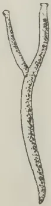
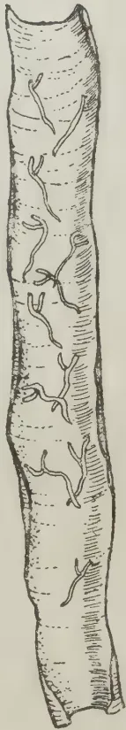
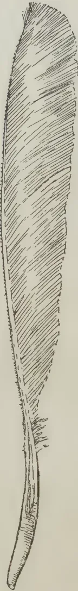
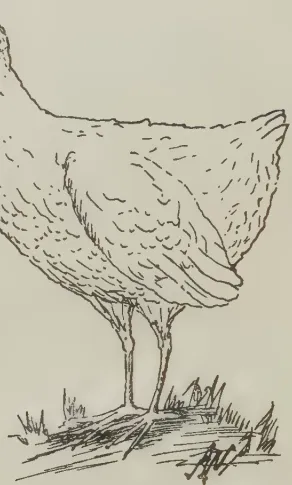
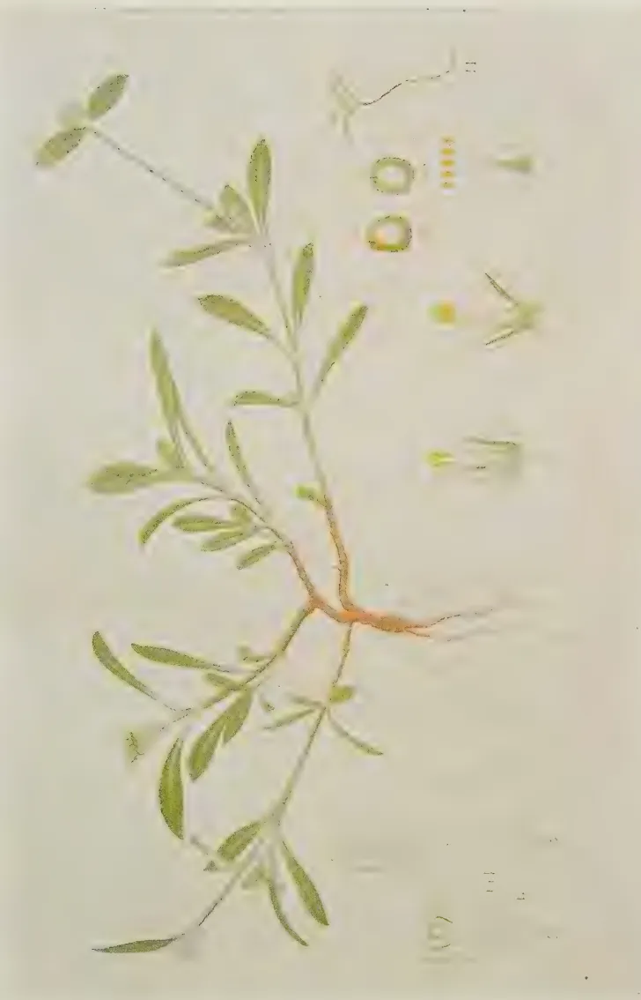
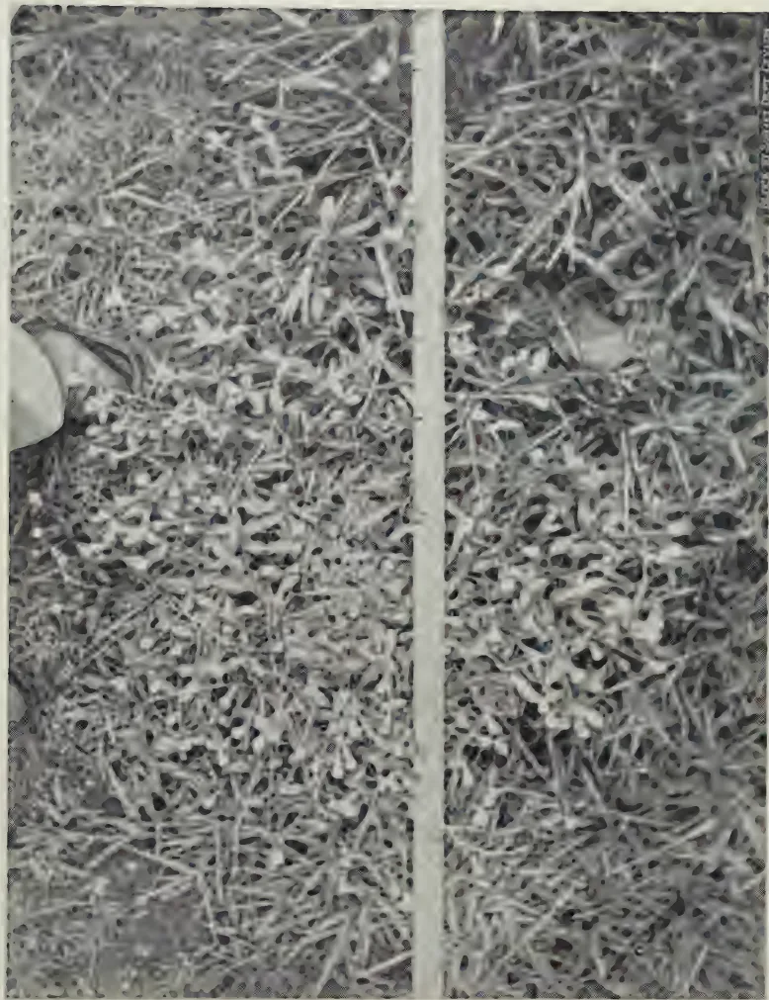

VOL. XCIV
PERADENIYA, MAY, 1940.
No. 5
| Page | |
|---|---|
| Editorial .. .. . | 267 |
| A Study of the Genus Capsicum, with Special Reference to the Dry Chilli—V. By W. R. C. Paul, M.A. (Cantab.), Ph.D., M.Sc. (Lond.), D.I.C., F.L.S. .. .. . | 271 |
| Chemical Notes (17). The Analysis of Some Manures, Fodders, and Feeding Stuffs. By A. W. R. Joachim, Ph. D. (Lond.), Dip. Agric. (Cantab.), F.I.C., and S. Kandiah, Dip. Agric. (Poona) .. .. . | 282 |
| Gapes in Poultry. By K. Thuraisingham, G.B.V.C. .. .. . | 290 |
| Gomphrena decumbens Jacq., a Weed new to Ceylon. By J. E. Senaratne, B.Sc. (Lond.), F.L.S. .. .. . | 293 |
| The Propagation of Water Hyacinth (Eichhornia crassipes Solms) by Seed .. .. . | 296 |
| The Policy and Work of the Department of Agriculture with regard to Agricultural Education .. .. . | 298 |
| Cleanliness in Dairy Routine .. .. . | 303 |
| Composts .. .. . | 305 |
| A Case for more Fodder-bearing Trees .. .. . | 311 |
| A Study of the Yield of Cassava as affected by the Age of Cuttings .. .. . | 316 |
| Minutes of the fifty-first Meeting of the Rubber Research Board .. .. . | 322 |
| Research on Grassland, Forage Crops and the Conservation of Vegetation in the United States of America .. .. . | 325 |
| Animal Disease Return for the Month ended April, 1940 .. .. . | 327 |
| Meteorological Report for the Month ended April, 1940 .. .. . | 328 |
1—J. N. 93818 (5/40)
[Faint page: no legible print of its own could be verified; text withheld (stage 4 review list)]
The
Tropical Agriculturist
MAY, 1940
EDITORIAL
AGRICULTURAL INCOMES (ANNUAL CROPS)
THE people of Ceylon have come to regard it almost as axiomatic that, with the current prices of produce, the returns from annual and seasonal agriculture are inadequate to make them turn to that form of industry; and the statement that people in other countries find these returns a sufficient inducement to pursue agriculture as a career (for if they did not, prices of commodities would shoot up) is met by a reference to the low standard of living in India. It would, therefore, be interesting to study the average agricultural income in a country whose standard of living is admittedly higher than our own. The comparison must be between the incomes per unit of area cultivated because the prices have no relation to the size of the farm. The material for such a study is supplied by the 586 pages of statistical tables published by the United States Department of Agriculture in the Agricultural Statistics, 1939, an extract from which relating to average yields of paddy per acre in the principal rice-producing countries of the world is reproduced in page 269 of this number. We quote the following figures from that publication showing the average yield per acre, the price per unit of measure or weight in dollar cents, and the gross income per acre converted into Ceylon currency in respect of a few casually-selected commodities in the year 1938.
| Yield per Acre. | Price in Dollar Cents. | Gross Income per Acre in Rupees. | ||||
|---|---|---|---|---|---|---|
| Wheat | .. | 13.3 bushels | .. | 55.2 | .. | 20.19 |
| Corn | .. | 27.7 ,, | .. | 50.3 | .. | 38.32 |
| Rye | .. | 13.8 ,, | .. | 34.3 | .. | 13.02 |
| Oats | .. | 29.7 ,, | .. | 21.8 | .. | 17.81 |
| Barley | .. | 24.0 ,, | .. | 37.3 | .. | 24.62 |
| Rice | .. | 49.0 ,, | .. | 59.0 | .. | 79.50 |
| Cotton | .. | 235.8 lb. | .. | 8.59 | .. | 55.70 |
From these gross receipts the farmer had to meet the interest on his capital, the rent of the land, if any, and all the expenses of cultivation, harvesting, and marketing.
268Ceylon does not have a statistical service, and no reliable figures of income from annual agriculture are available. But there was nothing that is not typical of the country in the experience of the Coconut Research Scheme in a small food production effort which it undertook last year. Twelve acres were planted with cassava, with green gram and some plantain trees between the rows. A sum of Rs. 496 was realized by the sale of the produce—an average of Rs. 41 per acre. Of the commodities mentioned in the Table above, in America only cotton and rice give an annual income higher than this figure. Four hundredweight of seed cotton per acre is not uncommon in Ceylon with very indifferent cultivation; and, by agreement with the Government, the Ceylon Spinning and Weaving Mills guarantee a price of Rs. 12 per hundredweight of seed cotton. In the absence of reliable figures, the yield of paddy per acre in Ceylon has been elevated from the plane of cold commercial statistics to that of controversy. Our own view of the matter based on the experience of the Department of Agriculture was explained in an Editorial in The Tropical Agriculturist, September, 1938. The annual rental value of paddy land provides another key to the solution of this controversy. There is no regular market in paddy lands with rent quotations in terms of money because tenancy is always on a produce-sharing basis; but the Department of Agriculture has had occasion to secure the lease of paddy lands, and its experience is worth quoting. An offer of Rs. 100 per acre per annum failed to induce landowners to lease 10 acres of land within 7 miles of Kandy. Eventually an absentee ground-share landlord agreed to lease his fields beyond Gampola at Rs. 60 per acre. In the Balangoda District of reputedly bad yields it was found impossible to get land at Rs. 50 per acre per annum until the Chief Headman of the area leased five acres of his own land at that figure as a special concession to the Department. Even if the ground rent is assumed to be as high as 50 per cent. of the gross income, the average annual value of the produce of paddy lands in Ceylon does not appear to be below Rs. 100 per acre.
In the light of these figures the argument from the depressed standard of living in India loses its force. If the American manages to maintain a very high standard of living on a yield of produce per acre which sells in the market for about Rs. 30, why does the Ceylonese turn his back on similar returns? The answer to this question is in the size of the farm. While an income of Rs. 10 from a one-acre farm cannot keep a man from starvation an income of Rs. 1,000 from a hundred-acre farm can keep him in some degree of comfort. The hundred-acre farm requires capital: but "If a man has a capital of
269Rs. 12,000 · why should he go on the land ? ”* That in a nutshell is the agricultural problem of Ceylon. Hitherto the returns from other investments have been so high that the man who had any money shunned annual crops. Unless we acquire a truer sense of proportion with the progressive shrinkage of the opportunities for extravagant profits, and the man with capital and enterprise creates a larger farming unit, we shall only continue to grumble that the one-acre farm in Ceylon does not give the farmer the same standard of living as the hundred-acre farm elsewhere.
* The Tropical Agriculturist, December, 1939, page 323.
270Average Yield of Paddy per Acre in Specified CountriesAverage yield of paddy per acre
| Country. | Average 1921-25. |
Average 1930-34. |
1937. | 1938. |
|---|---|---|---|---|
| Bush. | Bush. | Bush. | Bush. | |
| United States .. | 36.8 .. | 34.62 .. | 45.44 .. | 45.36 |
| Mexico .. | 27.02 .. | 30.58 .. | 34.36 .. | — |
| British Guiana .. | 39.26 .. | 39.24 .. | — .. | — |
| Spain .. | 98.09 .. | 115.1 .. | — .. | — |
| Portugal .. | 40.74 .. | 41.67 .. | 94.32 .. | — |
| Italy .. | 76.90 .. | 88.14 .. | 100.6 .. | 95.45 |
| Bulgaria .. | 42.42 .. | 38.89 .. | 40.48 .. | 64.81 |
| French Guinea .. | 19.26 .. | 14.71 .. | — .. | — |
| French Senegal .. | 18.21 .. | 19.44 .. | — .. | — |
| Sudan .. | 25.74 .. | 21.08 .. | — .. | — |
| Egypt .. | 69.93 .. | 61.66 .. | 61.67 .. | 66.18 |
| India and Burma .. | 28.79 .. | 27.86 .. | 30.65 .. | 28.23 |
| Turkey .. | — .. | 42.25 .. | 48.10 .. | 40.14 |
| Japan .. | 78.34 .. | 81.04 .. | 88.63 .. | 87.54 |
| Chosen .. | 39.69 .. | 43.96 .. | 72.26 .. | 64.49 |
| Taiwan .. | 46.14 .. | 53.69 .. | 64.60 .. | 68.22 |
| French Indo-China .. | 21.39 .. | 19.31 .. | 22.79 .. | — |
| Siam .. | 34.69 .. | 30.24 .. | 28.42 .. | 29.05 |
| Philippine Islands .. | 21.74 .. | 21.59 .. | — .. | 22.72 |
| Brazil .. | 33.33 .. | 26.34 .. | — .. | — |
| Madagascar .. | 33.95 .. | 23.37 .. | 34.53 .. | — |
| Java and Madura .. | 29.35 .. | 31.63 .. | 33.08 .. | — |
Note.—The transformation of figures for total rice production into figures expressing yield of paddy per acre has been based arbitrarily on the formula : 1 bushel paddy=30 lb. rice.
271W. R. C. Paul, M.A. (Cantab.), Ph.D., M.Sc. (Lond.), D.I.C., F.L.S.,
AGRICULTURAL OFFICER, CENTRAL DIVISION
THE economic importance of the Capsicum plant lies in the pungency and/or flavour of its fruits, although there are a few forms that are grown as ornamental plants. For medicinal purposes, pungency is held to be the only pharmacological property desired of the Capsicum fruit.
(a) Chemical constitution.—Pungency is due to a crystalline volatile alkaloid which was first isolated by Thresh in 1876, who assigned it the name of Capsaicin. It is one of the few pungent principles isolated in crystalline form as most of these are extracted as oils or soft resins. Capsaicin melts at about 64.5 to 65°C and at higher temperatures produces a highly dangerous and irritating vapour. It is slightly soluble in hot water but readily dissolves in most solvents.
Nelson (1919) showed that capsaicin is a condensation product of Vanillyl amine (3 Hydroxy-4 methylbenzylamine) and a decylenic acid and is represented by the formula :—.
Lapworth and Royle (1919) did not agree with Nelson that capsaicin is a vanillyl decenoyl amide. They found that a part of capsaicin readily reduces to ammonia and an aliphatic alcohol. But Nelson (1920 and 1923) later showed that free vanillyl amide is quite unstable and, when boiled with water or solutions of alkali carbonates, ammonia is given off. He confirmed his previous view of the structure of capsaicin by regenerating it from synthetic vanillyl amine and the decenoic acid previously isolated from Capsicum. He was, however, unable to carry out the complete synthesis owing to the fact that the structure of the decenoic acid entering into the molecule cannot be determined.
Although unaffected by alkalis, capsaicin can be destroyed by oxidation with and . According to the
* Continued from The Tropical Agriculturist, April, 1940.
272B. P. C. the quantity of capsaicin present in the official drug is only 0.02 per cent. The amount of capsaicin in commercial chillies varies considerably but is usually present to the extent of 0.10 per cent. Nelson (1919) extracted 0.22 per cent. of pure capsaicin from a very hot cayenne chilli, while Tice (1933) obtained quantities which varied from 0.1 to as much as 1.0 per cent. with different varieties.
Pungency is effected by the stimulation of the heat nerves in the mouth and throat and it is commonly determined by taste. In the Capsicum monograph of the U. S. PX (Pharmacopoeia of U. S. A. 1925) the Scoville organoleptic test has been suggested for determining pungency. In this test, 1gm. of the drug is placed in a stoppered flask and macerated for 24 hours. The clear supernatant liquid is suitably diluted with distilled water and sugar and a small quantity when swallowed at once should produce a distinct sensation of pungency. This test sets a standard for the minimum amount of capsaicin permissible in the official drug and requires that a dilution of 1 part of the Capsicum powder in 70,000 parts must give the characteristic pungent sensation. Gathercoal and Terry (1921) suggested using as a standard 1 part of pure capsaicin in 10,000,000 alcoholic solution or, as capsaicin is not readily available, 1 part of piperine in 100,000 alcoholic solution, but they point out the objections to such a test, viz., the difference in taste sensibility among individuals and the fact that this characteristic is rapidly blunted in most individuals when successive demands are made on it. Wirth and Gathercoal (1924) suggested a slight modification of the test so that by preparing a series of graduated dilutions and performing the test with each, the greatest dilution still giving the positive pungent reaction can readily be selected. This test is, however, subject to many limitations, the personal factor being the most important, but to those who are unaccustomed to a diet in which chillies are largely used it has proved to be fairly satisfactory for detecting marked differences in pungency between different cultural varieties of Bird chillies from various countries.
A colorimetric test depending on the reaction of Vanadium oxytrichloride () with capsaicin has been reported by Von Fodor, according to Thorpe and Whiteley (1935). He showed that 1/60mg. of capsaicin in a dry ether solution gives an intensive blue colouration with . As water destroys the vanadium salt and desensitizes the colour reaction, dry chemicals and apparatus should be used. Tice (1933) suggested certain modifications of this method, and compared the colour obtained with against standards prepared from pure capsaicin. He extracted 2 parts by weight of the dried fruit
273for 30–60 minutes with 100 volumes of dry acetone. Five cc. of the extract are treated with one drop of solution and the colour obtained compared with that given by solutions of pure capsaicin in acetone which has been coloured by previous extraction of capsaicin free extract. A number of solutions from pure capsaicin is prepared and treated with and the percentage of capsaicin in the sample is estimated from the standard which it matches most closely in colour.
(b) Location of capsaicin.—Erwin (1932) reported the results of a study of the origin and location of capsaicin undertaken by Martin at Iowa, who found that in the flower stage the inner sub-epidermal cells of the ovary appear enlarged and contain much starch and capsaicin, whereas in the partition walls and the placentas there was no change in size or in glandular functions. Although most abundant in the sub-epidermal cells, capsaicin was also found in the few layers below, which are densely filled with chromatophores. The ovary walls are, therefore, responsible for the production of capsaicin, but during the maturing stage from flower to fruit, the capsaicin is probably carried to the placentas and the seeds.
Tice (1933) found by the colorimetric method of examination of capsaicin, that the placenta contains most of the alkaloid while the pericarp has a small amount and the seeds practically none. The pungent forms have the placentas of the fruit as well as the pericarps and seeds pungent, while the mild or non-pungent forms have only their placentas pungent. The seeds acquire a certain degree of pungency through contact with the placenta. Sievers and McIntyre (1921) have shown that, as the fruit develops and reaches maturity, the pungency, as judged by the quantity of sugar required to mask this character, with an organoleptic test of 0.2 gm. of paprika, as well as by the increase shown in the total ether extract, increases from the first to the last stage in the development of the fruit.
(c) Genetics of pungency.—Webber (1911) and more recent workers such as Deshpande (1937) found that pungency is a heritable character, and they are agreed that it is a simple monogenic factor dominant to non-pungency, and when this factor is absent, the fruit is sweet or non-pungent. Miller and Fineman (1938), however, report that non-pungency was dominant to pungency in the , although the was pungent, being intermediate between both parents. They offered an explanation for this result by stating that, under cool conditions, pungency fails to develop in the heterozygous types, and non-pungency becomes dominant under such conditions. They obtained no evidence of linkage between the type of fruit apex or fruit base and pungency.
274Soil conditions are also reported to affect pungency. The Bird chilli grown in Africa is held to be more pungent than that grown anywhere else although it may be a more highly pungent form. Watt (1908) states that seed of Nepal chillies when grown elsewhere in India does not produce fruit of the same flavour and pungency as at Nepal. The writer, however, was unable to detect any difference in pungency with the Scoville organoleptic test in the ground powder prepared from pods produced from plants subject to different manurial treatments.
(d) Flavour.—There are certain aromatic substances affecting flavour, quite apart from pungency, although they occur in very small amounts. For some palates, flavour is an essential adjunct to pungency and one of the reasons why the Bird chilli which is so highly pungent is not generally relished in the East as a curry powder is because its flavour is not appreciated to the same extent as that of the Dry chilli forms of the variety acuminatum. In certain remote areas of Ceylon, however, there are peasants who consider the flavour and pungency of the Bird chilli to be superior to any other variety, and Ridley (1912) states that the Malays also prefer the Bird chilli on account of its greater pungency, but thinks that its easier cultivation may to some extent account for its greater popularity.
In Western countries, Hungarian paprika is held to be superior in flavour to all other forms of Capsicum including even Spanish paprika. Of the different cultivated varieties of the Dry chilli grown and imported into Ceylon, the Tuti-corin is, generally, considered to be the best flavoured. Opinions were collected from a number of peasants accustomed to the local Wanni chilli grown in the dry zone of Ceylon on the flavour of the Wanni and Tuti-corin chillies and the majority considered the flavour of the latter to be superior.
(e) Composition.—The chief constituents besides capsaicin are a crystallizable resin, a volatile oil, a fixed oil, and red colouring matter called capsanthin. The resin is officially recognized in the U. S. PX and the B. P. and is known as Oleoresina capsici and can be prepared by extraction with a suitable solvent such as alcohol which is afterwards removed by evaporation. According to the U. S. Definitions and Standards for Food Products, red pepper is defined as the dried ripe fruit of any species of Capsicum, containing not more than 8 per cent. total ash, of which not more than 1 per cent. should be insoluble in HCl. Cayenne pepper is defined as the dried ripe fruit of C. frutescens L. or C. baccatum L. or some small-fruited species of Capsicum. It should contain not more than 8 per cent. total ash of which not more than 1.5 per cent. should be insoluble
275in HCl. It should also contain not less than 15 per cent. non-volatile ether extract, not more than 1.5 per cent. starch and not more than 28 per cent. crude fibre. Paprika should not have more than 8.5 per cent. total ash, of which not more than 1 per cent. should be insoluble in HCl, and the iodine number of the oil should not be less than 125 and not more than 130. The reason for the latter is because olive and nut oils are used to brighten the colour of the fruits. In Ceylon, gingelly (Sesamum indicum L.) and coconut oils are used in certain areas for producing a gloss on the surface of the dry pods of local chillies.
Tolman and Mitchell (1913) have determined the composition of the fruit according to the percentage of ash, ether extract and crude fibre, of the African chilli (Nyasaland) and Hungarian paprika.
Further determinations of the composition of Capsicum fruits for comparison with other vegetables have been furnished by Chatfield and Adams, according to Sherman (1933), and by Akroyd (1937), whose figures are given below:—
TABLE I.Analyses carried out at the Nutrition Institute, Coonoor. (Akroyd 1937).
| Moisture per cent. |
Protein per cent. |
Fat Ether Extract per cent. |
Carbo- hydrate per cent. |
Mineral matter per cent. |
Fibre per cent. |
Calcium per cent. |
|
|---|---|---|---|---|---|---|---|
| Chillies green .. |
82.60 | 2.87 | 0.59 | 6.17 | 1.04 | 6.73 | .029 |
| Chillies dry .. |
10.02 | 15.88 | 6.24 | 31.51 | 6.10 | 30.15 | .163 |
According to Quinn, Burtis and Miller (1927), green Bell peppers are as good sources of vitamins A and B as lettuce, string beans and cabbage, but not as good as spinach, judged by growth increases on rats fed on rations deficient in these vitamins. Hermano (1930) showed that powdered chilli leaves are a rich source of vitamins A and B as seen by their curative effect on rats and pigeons suffering from ophthalmia, beri-beri and loss of weight when fed on basal rations deficient in these vitamins, while Ascham (1933) reports that Pimentos grown in Georgia rank higher in vitamin A than butter, eggs, carrots and spinach. As regards vitamin B, Sherman (1933) states that peppers rank as high as cabbage, lettuce and tomatoes and are good sources of this vitamin.
276Vitamin C was first isolated by Szent-Gyorgyi from Paprika in Hungary and he found it to be similar in chemical and anti-scorbutic properties with that obtained from the adrenal glands. Green fruits of Capsicum are one of the richest sources of vitamin C. Paprika is so rich in this vitamin that it has proved very suitable for the commercial production of this vitamin.
Vitamin P is a new vitamin also discovered by Szent-Gyorgyi, who extracted it from green paprika and lemons. It is stated to be a vitamin useful in blood poisoning and hæmophilia.
Akroyd (1938) gives the following figures for his vitamin A and C determinations of chillies:—
| Carotene (International vitamin A) Units per 100 gm. |
Vitamin C mg. per 100 gm. |
|||
|---|---|---|---|---|
| Chillies green | .. | .. 454 | .. | 111 |
| Chillies dry | .. | .. 576 | .. | 51 |
Joachim (1939) also obtained a figure of 50.5 mg. of vitamin C per 100 mg. for dry chillies.
In the tropics the Dry chilli is the type which is largely cultivated because of its great demand as an ingredient of curry powder which is an essential adjunct to most of the staple foods consumed there. It is grown in the areas of comparatively low rainfall where the ripening and drying of the fruits can take place successfully. In the areas where the rainfall conditions are heavier, the various forms of the green chilli—variety longum—are grown while the Bell peppers—var. grossum—are mostly confined to up-country gardens of the tropics.
In Ceylon, the primitive method of growing chillies can still be found in the chenas—areas where shifting cultivation is practised. They are chiefly situated in the dry zone areas of the Island and are isolated blocks of newly-burnt land surrounded by jungle. The landless peasant who is allowed to clear one acre of crown jungle for raising his high-land food crops (as distinct from wet-land paddy) sows broadcast, with the commencement of the north-east monsoon rains, about 6 to 8 lb. of kurakkan (Eleusine coracana Gaertn) mixed with a handful of maize, mustard and Amaranthus sp. together with about 1 to 2 lb. of seed of the Wanni chilli (var. cuneatum).
277As soon as the kurakkan crop is harvested during January and February, cattle are allowed to enter the chena and graze down the stubble. At this stage, the chilli plants are about 1 to ft. high and a first picking is taken before the cattle enter the land. They eat off the tops of the chilli plants and early in March the chena is hand-hoed with the mammoty. Gingelly (Sesamum indicum Linn) is then sown broadcast with the comparatively poor south-west monsoon rains in March or April, and the chilli plants develop a new flush. During June and July, the ripe chillies are picked and dried in the sun. The gingelly crop is harvested in June or early July and after this one or two more pickings of ripe chillies may be taken before the crop is terminated owing to the prolonged dry weather. The yield of dry chillies thus obtained in a chena is poor, amounting to not more than 2-3 cwt. per acre.
When chilli seed is sown broadcast along with other seed in a chena the growth of the seedlings is slow. Although the seedlings develop a deeper tap root than those which are transplanted, they are not able to thrive as well as the latter which are planted in rows and are kept free of weeds with a surface soil mulch, even though they complete their economic life by about March. In August and September cattle are allowed to enter the chena once more and all the stubble is eaten down again and as far as the woody tissues of the stems of the chilli plants. Towards the end of September, these chenas are hand-hoed with the mammoty, leaving only the woody portions of the stems of the chilli plants and they are again sown with kurakkan with the early rains in September or October. These second-year, or kanathu chenas as they are known locally, are then used for raising the same crops as before but at the end of the second year they are abandoned and revert to jungle. During the second year, the chilli plants of the previous year put out fresh growth and a small crop of 1- cwt. of dry chillies per acre may be taken.
In the Jaffna Peninsula, situated at the northern end of Ceylon, the cultivation of dry as well as green chillies is carried out much more intensively. The crop stands second in order of importance amongst the annual money crops of the Peninsula—tobacco being foremost—and it is grown both in paddy fields in rotation with paddy, tobacco and millets, and on high land with tobacco, millets and cassava. Nurseries are raised and the seedlings planted out when about 4 to 6 weeks old. Irrigation from wells is practised, water being first issued into small beds along the sides of which the chilli seedlings are grown. Later on, as the plants become older, the beds are converted into ridges and furrows and when the plants are earthed up, they
278remain on the ridges. Water is then issued along the furrows. Good yields are obtained varying from 6 to about 10 cwt. of dry chillies per acre.
The following is a detailed account of the method recommended for cultivating the Tuticorin chilli in the dry zone areas of Ceylon, the information being based on the results of experiments and observations obtained on some of the agricultural stations in the Island.
(a) The nursery.—The preparation of a good nursery bed is essential for the raising of a supply of vigorous seedlings. After turning the soil over, a dressing of compost at the rate of 2 to 3 lb. per square foot should be made and the soil levelled. In order to prevent an attack of damping-off disease of the seedlings, beds about 6 to 9 in. high to provide good drainage should be made. The edges of the beds should be slightly raised so as to prevent soil wash. The beds should be about 3 feet wide separated by 1 foot drains, and the top one inch of soil should be sieved so that a fine tilth may be obtained.
Seed sown at the rate of 9 oz. per 225 sq. feet of nursery will provide sufficient seedlings for planting one acre. Three beds each 25 feet long and 3 feet wide are a convenient size and on each bed about 3 oz. seed should be sown in lines drawn parallel to the width of the beds to a depth of about in. The lines may be drawn spaced 3 inches apart with the aid of a stick. Before sowing, the seed should be soaked overnight in water and then dipped in copper sulphate solution (1.25 per cent. or 1 oz. in 2 quarts of water) for 8 minutes, dried for 30 minutes and dusted with air-slaked lime. The seed may be dropped along the lines at the rate of 1 or 2 per inch of line and after sowing the lines should be closed with soil, and the surface of the beds should be pressed down firmly with a plank. It was found that the seeds germinated quicker when covered to a depth of inch than when sown deeper, while surface-sown seed does not germinate well and the radicles soon turn brown and die owing to exposure on the surface of the soil.
After sowing, the beds should be lightly watered and covered over with a layer of straw and thatched coconut leaves to prevent desiccation of the surface soil and damage from the impact of rain. When the cotyledons begin to emerge, which under conditions in Ceylon usually takes place about the 7th day after sowing, the shade should be removed. If there is no rain, the beds should be watered twice daily.
When the seedlings are about a fortnight old in the nurseries, they should be watered with a solution of sulphate of ammonia at the rate of 1 oz. per gallon of water over 50 sq. ft. and again a week later in order to develop sturdy seedlings. Spraying
279with a mixture of sulphur and copper fungicides such as Sulphinette and Buisol at 1 oz. each with 1 oz. of yellow or soft soap, dissolved in one gallon of water, is effective in preventing leaf curl caused by mites and thrips and leaf spot caused by Cercospora capsici H. & W.
The opinion is, generally, held that the seedlings should be transplanted when about 6 weeks old, but observations on the growth of seedlings planted out between 4 and 7 weeks old indicated that those which are most vigorous developed from 4-weeks-old seedlings raised in nurseries under conditions described above. The first flowers appear in about 4 weeks' time from sowing and this should, generally, be regarded as the signal for topping and transplanting. Topping is a necessary operation because in the process of transplanting many of the finer roots and root hairs become damaged and until fresh rootlets are developed, the leaf surface should be reduced in proportion to the absorptive surface.
(b) Planting out.—This is best done in the cool of the evening, and where irrigation facilities are not available with the commencement of the north-east monsoon rains. The seedlings should be planted out with the aid of a pointed stick which is used in making a small hole to receive each seedling. After planting, the soil should be pressed all round the base of the seedling so that the roots come in close contact with the soil particles, but the soil should not be pressed too firmly against the collars of the seedlings when there has been no rain after transplanting as several seedlings die. Over the surface, a little dry soil should be thrown so as to create a mulch, if the weather be dry at the time.
Garcia (1921) reports that transplanting encourages earlier as well as more profuse branching towards the base of the plant than seeds sown at stake. After planting out, it is not necessary to shade the seedlings until they become established.
The number of seedlings per hill varies between two and four. A larger number than four results in overcrowding and the fruits produced from such plants are small and few. When the weather conditions for transplanting have been favourable and there is no likelihood of damage from hares, grasshoppers or lizards as when the field is surrounded by jungle, two seedlings would suffice.
The seedlings per hill may be spaced in rows 3 by 2 ft. apart depending on the fertility of the soil and the cultural treatments adopted, and they may be planted either on the ridges or on the flat. Paul and Fernando (1939) carried out an experiment with the Elephant's trunk chilli (var. longum) to determine
280the effects of spacing, ridging, and seedling number per hill, using the following three sets of factors in all possible combinations :—
Spacing— feet.
feet.
Ridging—Planting on the flat.
Planting on ridges.
Seedling :
number—2 seedlings per hill.
4 seedlings per hill.
Unfortunately, abnormally dry weather prevailed and there was such a poor shoot and root development of the plants that the significant increased yields obtained with the closer spacing and the higher seedling number per hill can be explained on the basis of the increase in plant number per unit area without the effects of overcrowding. Although there was no significant difference between flat and ridge planting, there was a significantly better stand of seedlings with flat planting probably because the severer drought conditions caused a greater root exposure of the plants on ridges than on the flat. The experiment, therefore, needs repetition over a period of years before definite conclusions can be drawn, but it may be stated for the present that where the land is well-drained ridging does not possess such advantages as would justify the extra expenditure incurred.
Paul and Fernando (1939) carried out a uniformity trial with Tuticorin chillies and found that, with plots which were well orientated by arranging them in the direction of the fertility gradient, the optimum plot size is 1/45th acre for field experiments with this crop.
Reference to work on nutrition and manuring has already been made in Part IV of this series*. It may be pointed out that, in the dry zone of Ceylon, a basal dressing of about 5 tons of compost per acre and an application of nitrate of soda or where the rainfall conditions are uncertain, sulphate of ammonia at 1 cwt. per acre in two equal dressings of cwt. each, the first about 3 weeks after planting and the second about a month after the first application would be beneficial.
(c) Intercultivation.—The crop benefits considerably by frequent intercultivation, especially during periods of prolonged dry weather and the creation of a surface soil mulch enables the crop to withstand inadequate supplies of soil moisture. The first intercultivation which may be fairly deep should be given about 7–10 days after planting out at about
* Vide The Tropical Agriculturist, April, 1940.
281the time that the vacancies are filled. The second intercultivation may be carried out about a fortnight later, at the same time that the fertilizers are applied, and this should be followed by an earthing up with a mammoty. The third intercultivation should be about 3 weeks later and should be fairly shallow. The first two intercultural operations may be satisfactorily carried out with a toothed cultivator or a blade harrow, while the earthing up and the third intercultural operation will have to be undertaken with the mammoty.
(To be continued.)
282A. W. R. JOACHIM, Ph.D. (Lond.), Dip. Agric. (Cantab.), F.I.C.,
CHEMIST
AND
S. KANDIAH, Dip. Agric. (Poona),
ASSISTANT IN AGRICULTURAL CHEMISTRY
FROM time to time samples of manures, fodders, feeding stuffs, agricultural by-products and "waste" materials have been examined in the Chemical Laboratory for advisory purposes. The analyses of the more important of these samples, with brief comments on their nature and composition, are presented in this Chemical Note, as they will doubtless prove of interest to local agriculturists. The data are classified under three heads—manures, green manures and composting materials, and fodders and feeding stuffs—and are shown in Tables I., II. and III. The agricultural waste products examined may find a use as manure or feeding stuffs and their analyses are included in the appropriate tables. In the case of some samples, e.g., the green manures, the analyses have only been partial, but in these instances the essential information in regard to the sample was obtained and is furnished. The total number of samples dealt with in this paper is 46 and comprises the following: 7 manures, 20 green manures and composting materials, and 19 fodders and feeding stuffs.
Bat Manure or Guano.—These are the most promising of the manure samples examined. Sample 1 consisted of dry, grey-brown, elongated pellets about 5 mm. long and 2 mm. thick; sample 2 of moist black pellets of the same size; sample 3 was a dry brown powder with a few pellets in it. The last appeared to be the oldest of the three while sample 2 was the freshest. These differences in age of samples are reflected in their composition, which will be noted to vary very considerably. Thus nitrogen varies from 6.1 to 12.8 per cent., phosphoric acid from 1.1 to 4.1 per cent., and potash from 1.0 to 2.4 per cent. The nitrogen content of even the poorest of these samples of bat guano is high. Vorster Nel (1) in S. Africa found that fresh bat manure contained about 10 per cent. nitrogen, 1 to 2 per cent. phosphoric acid, and 1 to 2 per cent. potash. Older
283samples had appreciably lower nitrogen contents, while their phosphoric acid and potash contents were occasionally as much as 40 and 11 per cent., respectively.
On the basis of the present market prices of manures and fertilizers, the local samples are worth from Rs. 100 to Rs. 200 per ton. The manure is reported to be found in remote caves in parts of the Southern Province, and probably occurs in caves in other parts of the Island as well. There is little doubt that, if found in quantity, it would repay exploitation and prove a very valuable substitute for artificial fertilizers which are likely to become increasingly difficult to obtain, should the war last.
Cacao Shell and Waste Material.—The analysis of two samples of cacao shell (the testa or papery membrane attached to the beans) and waste material undertaken with the object of determining their possibilities as manure indicated that their average nitrogen content was approximately 2 per cent., phosphoric acid about 1 per cent., potash 2·3 per cent., and lime about 0·5 per cent. The material is thus of low manurial value. Owing to its high fat content, its decomposition in the soil would be very slow. The shell and waste could be valued, for manurial purposes, at about Rs. 15 per ton. It is much more valuable as a feeding stuff, and its use for this purpose will be referred to in a subsequent section of this Note.
Cotton Waste.—This waste material which is available in some quantity from the local spinning and weaving mills also contains about 2 per cent. of nitrogen. The sample examined was very poor in potash and poor in phosphoric acid; its lime content was fair, viz., 2·9 per cent. The waste is, therefore, of little value as a manure and is not recommended for application to soils in its present condition. On soils which are either too heavy or too light it may, however, be of some advantage in improving tilth. It is perhaps best used along with other raw materials for composting.
Paddy Husk Ash.—This is a material which varies fairly appreciably in composition. Its average potash content is about 2 per cent., phosphoric acid 1 per cent., and lime 1·2 per cent. It is, therefore, of low manurial value and can be priced at about Rs. 6 per ton. It is doubtful whether in many instances it would justify transport costs.
The green manure and composting materials fall into two groups: leguminous and non-leguminous. In Table II. are indicated the moisture, ash, organic matter and nitrogen contents of the materials. The results are expressed as percentages on material as received and, for purposes of
284comparison, on a dry matter basis. The nitrogen contents of the leguminous plant materials vary from 1.8 in soybean (whole plant at flowering stage) to 4.4 in the leafy material of Psophocarpus longipedunculatus. The corresponding figures for the non-leguminous plant materials are 0.7 in fully-flowered mana grass to 4.3 in Eupatorium paniculatum. If the last-mentioned is excluded, the nitrogen contents will range from 0.7 to 2.6 per cent. only. These figures confirm what has previously been found, that most non-leguminous plant materials are poorer in nitrogen than leguminous green manures (2 and 3). The analyses of a few of these materials for potash and phosphoric acid (not published) serve to confirm previous findings on this subject. The low nitrogen percentages of mana grass and fern material should be noted. These materials are suited only for composting.
Hays.—The analyses of 9 samples of hay prepared from locally-grown fodders, in some cases at different stages of growth, indicate that sunn hemp hay is the richest of all samples in protein content. The analytical data indicate that Guinea grass hay is superior to Mauritius grass hay in protein and ash. As would be expected, the younger the grass, the more nutritious and less fibrous is the hay prepared from it. This is exemplified in the case of both Guinea and Mauritius grasses, in respect of the organic as well as the mineral constituents. The high lime and phosphoric acid contents of the Guinea grass hay samples from Negombo, compared with the averages for Ceylon fodder grasses, are due to heavy manuring with basic slag and liming. Mauritius grass hay has lower percentages of these minerals. Some of the local non-legume hays compare favourably with temperate non-legume hays except in regard to oil, in which they are poor; Mauritius grass hay and African Star grass hay (Cynodon plectostrachyum) are relatively low in protein. Local lucerne hay is of less nutritive value than the corresponding English hay. A sample of natural pasture grass from the Island of Delft, the soils of which are derived from coral limestone, was found to be rich in phosphoric acid and exceedingly rich in lime.
Nelu (S) Leaves and Loppings.—The analysis of the leaves and loppings of the Nelu (S) plant, a species of Strobilanthes, which is reported to be eaten by cattle up-country, showed that this material compares favourably with Guinea grass and is, in fact, richer than the latter in protein and carbohydrates. It is superior to Napier grass in food constituents. If there are no harmful effects when cattle are fed on it over an extended period, the material should be useful as a green food in up-country areas where fodder is scarce.
285Cacao Shell (Clean) and Waste.—Within recent years cacao shell* has found some use in Europe as a feeding stuff owing to the discovery that this by-product of the cocoa industry is rich in vitamin D. Feeding tests conducted indoors during winter over a period of a month, showed that the vitamin D potency of butter made from the milk of animals fed with this by-product was two-and-a-half to three times its original value. The daily allowance of cacao shell to a cow should not, however, exceed 2 lb. (4). Apart from being a good source of vitamin D cacao shell is rich in protein. Waste material obtained locally from cacao stores which consisted of cacao shells, immature and spoilt seed, cacao dust, &c., is rich in protein and fat, and might possibly be found to be useful for feeding cattle. No information on the feeding of this material to livestock is, however, available; and if used for this purpose, great caution will be necessary, as the material contains the alkaloid theobromine.
Kapok Seed.—This is very similar in composition to cotton seed. It contains about 20 per cent. of protein and over 20 per cent. of an oil which, on extraction and refining, can be employed as an edible oil, for soap making and other purposes to which cotton seed oil is applied. The cake obtained is used as a feeding stuff for livestock but is considered to be somewhat inferior to cotton seed cake (5). There is no reason why more use should not be made of this seed locally. With the development of kapok cultivation fairly large quantities of seed would become available.
Rice Bran and Meal.—There are two grades of rice "bran" sold locally—the "market" rice bran, which may be a local or an imported product, and rice "meal" from the Government mill at Anuradhapura, which is also sold as rice bran. The latter is much superior to the market bran in feeding value. An analysis of a sample of rice (bran) meal from the Government mill by Koch (6) showed that it contained as much as 23.5 per cent. of oil. A previous sample examined in this laboratory gave the lower value of 15.6 per cent. oil. The protein content remains fairly constant between 10 and 12 per cent. The "market" sample has much higher fibre and ash, and lower protein and fat contents than the Anuradhapura mill samples. This would appear to indicate that the "market" product has been adulterated or become contaminated with rice husks in the process of manufacture. Rice "meal" is very rich in phosphorus and is a good source of the vitamin B complex.
Palmyra Leaf.—Green palmyra leaves are used in Jaffna District during the dry season for feeding cattle and goats, and form the cheapest fodder available there. An analysis of an air-dry sample revealed that it had over 12 per cent. of protein,
* See description under section 'manures'.
2864 per cent. of fat, and 33 per cent. of carbohydrate. The material compares favourably with good Guinea grass hay and is even richer in fat. Its fibre content is, however, appreciably higher.
Tapioca Cattle Food.—A cattle food obtained as a by-product in the preparation of tapioca from cassava roots, is essentially a carbohydrate feeding stuff, with a very low protein and an even lower fat content.
Thanks are due to Mr. D. G. Pandittesekere for a few of the analyses quoted here.
[Faint page: no legible print of its own could be verified; text withheld (stage 4 review list)]
288TABLE II.
Green Manures and Composting Materials
| No. | Sample | Nature and Origin | Moisture Per cent. |
Organic Matter Per cent. |
Ash Per cent. |
Nitrogen Per cent. |
|---|---|---|---|---|---|---|
| Leguminous | ||||||
| 1 | Aeschynomene sensitiva (Thornless mimosa) | Air dry, Chilaw District | 18.2 | 76.7 | 5.1 | 2.22 |
| 2 | Cassia didymobotria | Fresh loppings, Peradeniya | 70.5 | 93.7 | 6.3 | 2.71 |
| 3 | Pongamia pinnata | Fresh leafy material, Kadugannawa | 71.3 | 26.6 | 2.1 | 0.98 |
| 4 | Soya max (Soy bean) | Whole plant at flowering stage, Peradeniya | 75.2 | 92.7 | 7.3 | 3.31 |
| 5 | Sesbania speciosa | Air dry, Anuradhapura | 14.7 | 78.8 | 6.5 | 1.80 |
| 6 | Phaseolus lathyroides | do. | 15.2 | 92.4 | 7.6 | 2.48 |
| 7 | Psophocarpus longipedunculatus | Fresh, Peradeniya | 85.8 | 93.0 | 7.0 | 2.02 |
| 8 | Cassia alata (Reta tora S.) | do. | 83.5 | 14.9 | 1.6 | 0.53 |
| 9 | Richardia scabra | Non-Leguminous Fresh, Peradeniya |
80.2 | 90.8 | 9.2 | 3.36 |
| 10 | Eupatorium paniculatum | Fresh, Opanaike | 78.6 | 87.0 | 13.0 | 2.18 |
| 11 | Strobilanthes spp. (Nelu, S.) | Fresh loppings, Peradeniya | 75.2 | 88.2 | 11.8 | 4.33 |
| 12 | Do. Green leaf variety | .. | .. | .. | .. | 0.59 |
| 13 | Do. Purple leaf variety | .. | 67.6 | .. | .. | 2.35 |
| 14 | Fern | Fresh, Peradeniya | 61.7 | .. | .. | 0.36 |
| 15 | Justicia procumbens (Mayeni, S) | do. | 71.9 | .. | .. | 0.94 |
| 16 | Drymaria cordata (Kukululu-pala, S) | Fresh, Lindula | 78.0 | .. | .. | 0.73 |
| 17 | Spinaea salicifolia | Air dry, Kandapola | 19.2 | 77.2 | 3.6 | 0.44 |
| 18 | Solanum spp. | do. | 11.3 | 95.7 | 4.3 | 2.0 |
| 19 | Passiflora foetida (Wild passion fruit) | Fresh cuttings, Peradeniya | 75.4 | 79.8 | 8.9 | 1.39 |
| 20 | Cymbopogon confertiflorus (Mana grass, S) | Fresh, fully-flowered, Peradeniya | 62.8 | 22.5 | 2.1 | 1.72 |
| Do. | Fresh, unflowered, Peradeniya | 65.0 | 91.2 | 8.8 | 2.03 | |
| 0.59 | ||||||
| 2.41 | ||||||
| 0.27 | ||||||
| 0.71 | ||||||
| 0.28 | ||||||
| 0.84 |
NOTE: Figures in thick type refer to percentages on moisture-free basis.
289TABLE III.
Fodders and Feeding Stuffs
| No. | Sample. | Origin. | Moisture. | Proteins. | Fat. | Carbo- hydrates. |
Fibre. | Ash. | Lime. | Phosphoric Acid. |
||||||||
|---|---|---|---|---|---|---|---|---|---|---|---|---|---|---|---|---|---|---|
| Per cent. | Per cent. | Per cent. | Per cent. | Per cent. | Per cent. | Per cent. | Per cent. | Per cent. | Per cent. | Per cent. | Per cent. | Per cent. | Per cent. | Per cent. | Per cent. | |||
| 1 | Guinea grass hay | Negombo | 12.5 | 8.5 | 1.1 | 43.3 | 28.3 | 8.3 | 0.99 | 0.68 | ||||||||
| 2 | Do. .. | do. | 12.5 | 12.6 | 1.4 | 40.4 | 25.5 | 7.6 | 1.01 | 0.62 | ||||||||
| 3 | Do. 3 weeks old | do. | 11.2 | 15.6 | 43.6 | 21.9 | 7.7 | 0.89 | 0.54 | |||||||||
| 4 | Do. 6 weeks old | do. | 11.2 | 10.1 | 44.0 | 28.7 | 6.0 | 0.74 | 0.48 | |||||||||
| 5 | Mauritius grass hay | do. | 13.7 | 6.6 | 1.3 | 41.6 | 32.3 | 4.5 | — | — | ||||||||
| 6 | Do. 6 weeks old | do. | 11.0 | 7.9 | 47.9 | 27.7 | 5.5 | 0.49 | 0.39 | |||||||||
| 7 | African star grass hay | Murunkan | 11.3 | 9.5 | 2.6 | 42.3 | 24.1 | 10.2 | — | — | ||||||||
| 8 | Lucerne hay .. | Jaffna | 12.3 | 11.9 | 1.7 | 32.3 | 34.9 | 6.9 | — | — | ||||||||
| 9 | Sunnherp hay | Nikaweratiya | 10.2 | 18.4 | 1.6 | 33.3 | 29.4 | 7.1 | 3.79 | 0.83 | ||||||||
| 10 | Natural pasture | Delft Island | 12.2 | — | — | — | — | 17.0 | — | — | ||||||||
| 11 | Nellu (S) leaves and loppings | Peradeniya | 78.2 | 3.4 | 0.5 | 9.5 | 4.3 | 4.1 | — | — | ||||||||
| 12 | Cacao shell (clean) | do. | 15.5 | 10.2 | 1.9 | 52.2 | 15.5 | 4.7 | — | — | ||||||||
| 13* | Cacao shell and waste | Colombo | 10.5 | 12.8 | 18.6 | 41.3 | 9.8 | 7.0 | — | — | ||||||||
| 14 | Kapok seed .. | Peradeniya | 10.5 | 19.6 | 20.6 | 20.0 | 23.9 | 5.4 | — | — | ||||||||
| 15 | Tapioca cattle food | Kandy | 13.4 | 2.3 | 0.4 | 77.6 | 3.3 | 3.0 | — | — | ||||||||
| 16 | Palmyra leaf .. | Jaffna | 8.9 | 12.1 | 4.2 | 33.5 | 34.6 | 6.7 | — | — | ||||||||
| 17 | Rice bran .. | Government mill, Anuradhapura |
9.8 | 11.9 | 23.5 | 36.2 | 9.2 | 10.2 | 0.07 | 4.89 | ||||||||
| 18 | Do. .. | do. | 9.4 | 10.3 | 15.6 | 35.9 | 11.9 | 16.9 | — | — | ||||||||
| 19 | Do. .. | Colombo Market | 9.0 | 6.6 | 8.1 | 28.7 | 26.8 | 20.8 | — | — | ||||||||
* Not recommended as a feeding stuff till experience is gained.
290K. THURAISINGHAM, G.B.V.C.,
ASSISTANT VETERINARY SURGEON, VETERINARY
LABORATORY, PERADENIYA
GAPES is a common and dangerous disease affecting poultry.
Cause.—The disease is caused by a Y-shaped worm which is known as Syngamus trachea, the Forked worm, the Red worm or the Gape worm.
The gape worm is reddish in colour. The male is about th of an inch long while the female measures about an inch. The male worm is permanently attached to the female at the upper third of the head end and it is this attachment that gives the worm the appearance of a Y. The female worm has a circular mouth with many teeth, by which it attaches itself to the mucous membrane lining the inner side of the wind pipe of the bird.
Life History of the Parasite.—The eggs laid by the mature female worm are coughed up into the mouth from the wind pipe and generally swallowed by the host. These eggs later pass out with the droppings. A few of the eggs may be expelled through the mouth in the act of coughing.
In the presence of warmth and moisture, embryos develop in the eggs in about a week to ten days : and within another fortnight or so emerge as larvae.
When the larvae or the eggs containing the developed embryos are swallowed by a susceptible bird, the parasites penetrate the wall of the intestines and are carried away by the blood stream to the minute blood vessels in the lungs. From here, they migrate by way of the small air tubes to the main air tube. When they have once reached the wind pipe, they cling to the mucous membrane lining it. It takes about a month to complete a cycle.
Earthworms may act as intermediary hosts and the larval worms can remain alive for long periods inside the earthworm. If the earthworm is eaten by a fowl the development proceeds in the fowl.
How Birds become Infected.—Infection generally takes place by a susceptible bird picking up the larvae or the eggs with the enclosed embryos from the ground with the food or in the drinking water. The feeding habits of poultry favour the spread of the disease.
[Faint page: no legible print of its own could be verified; text withheld (stage 4 review list)]
This image is a scan of a blank page. The paper has a light beige or cream-colored tint. There are a few very small, dark specks scattered across the surface, which appear to be scanning artifacts or dust particles. No text, lines, or other markings are present on the page.
A detailed line drawing of two small, elongated, worm-like organisms. They are positioned side-by-side, with their heads pointing towards the top left. The worms have a slightly textured appearance with small, dark spots along their length.1

A line drawing of a long, narrow, vertical structure representing a trachea. Inside this structure, several small, branching, worm-like organisms are shown. Some are near the top, while others are further down, appearing to be embedded within the tracheal wall.2

A line drawing of a single, long, narrow feather. The left side of the feather is covered in fine, parallel lines representing barbs, while the right side is smooth, indicating it has been stripped of its barbs.3

A line drawing of a small, fluffy chick standing on a patch of grass. The chick is facing left and has its beak wide open, showing its tongue. Its body is covered in fine, downy feathers.4
BLOCK BY SURVEY DEPT. CEYLON.
Symptoms.—The symptoms of gapes do not appear before the chicks are about two to three weeks old. The most serious symptoms are produced in young chicks. The parasites suck blood, but the loss of blood is not the most serious injury. Owing to the irritation caused by the bites of these parasites, a large quantity of mucus accumulates in the wind pipe. This interferes with the breathing, and the birds sneeze, shake their heads and stretch their necks and gape with the beaks wide open in order to take in more air. Most of these symptoms are almost entirely due to the mechanical blockage of the wind pipe by the worms, the local swelling at the points of attachment and the accumulation of mucus due to the irritation. At first the appetite remains good but later on affected birds become emaciated, the wings droop, the feathers become ruffled and the eyes are kept half closed.
Death may take place either from suffocation or from exhaustion. The mortality in chicks is about 40 per cent. to 50 per cent., but when the infection is heavy it may be as high as 90 per cent.
In most text books it is stated that fowls over the age of 3 months are immune to gapes and that gape worms are never found in adult birds. This is certainly not the case in Ceylon where adult fowls are not uncommonly found to harbour a few gape worms in the wind pipe. Such adult birds are as a rule not severely affected but are dangerous sources of infection.
Infected adult turkeys usually show no symptoms even though they may be badly affected and hence may be unsuspected carriers of infection.
Diagnosis.—The symptoms described above may make one suspect gapes; a definite diagnosis can be made by opening wide the beak and holding the bird in such a position that the inside of the throat gets a direct light. Then look down the wind pipe when the opening into the wind pipe opens as the chick breathes. The worms can be seen clinging inside the wind pipe.
The eggs of the parasites may sometimes be detected by examining the saliva of an affected bird under the microscope.
Post-Mortem.—The carcasses of birds which have died as a result of a heavy infection are always emaciated and anaemic. The inner lining membrane of the wind pipe is generally studded with small nodules as a result of the bites of the worms. The worms are found in the lower part of the wind pipe attached to the mucous membrane and surrounded by mucus which may be blood-stained.
Treatment.—Treatment is not very satisfactory in bad cases. Mechanical removal of the worms from the wind pipe is the method generally adopted. A feather stripped of its barbs
292along one side is inserted into the wind pipe, twisted round and pulled out. The twisting round of the feather has a tendency to dislodge the worms and they come off with the feather when it is pulled out. Some skill and practice is necessary to do this as it is sometimes difficult to get the feather into the wind pipe owing to the automatic closing of the opening into it. The opening into the wind pipe lies at the back of the mouth and it can be observed to open and close as the chick breathes. The feather must be inserted carefully when the entrance opens.
Pointed articles such as hair pins, tweezers, "ekel", &c., should never be used to dislodge the worms. They do more harm than good by injuring the mucous lining of the wind pipe.
Various drugs such as tobacco, sulphur, carbolic acid, camphor, &c., have been tried both in the form of inhalations and in the form of local applications with little or no success.
No attempt should be made to treat badly-affected birds. As with most other poultry diseases the most economical procedure is to kill the badly-affected birds and burn the head, the wind pipe, the lungs, and the intestines.
Prevention.—As adult birds, especially turkeys, remain carriers, chicks should on no account be allowed to run along with them or be reared on ground where they have previously been housed.
Adult birds used for hatching eggs should be carefully examined before setting to see that they are not harbouring the parasites.
Chicks should be periodically examined and all suspected cases should be removed as they will be disseminating many eggs.
Chicks till they are about two or three months old should be reared on clean ground on which no adult fowls or turkeys have been running. If this is not possible then they should be reared in brooders with wire netting floors as this will prevent them from picking up the infection from the ground during the time when they are most susceptible.
Separate runs should be set aside for rearing chickens. These runs should be limed once a year, ploughed or dug up and left vacant for about two months.
Moist localities where earth worms abound should be avoided as much as possible.
Feeding and drinking utensils should be well scrubbed and washed daily preferably in hot water.
Droppings which are the main source of infection should be collected daily and removed to a distance or buried deeply.
As with most other diseases of poultry, overcrowding of runs and yards is the chief cause of heavy losses.
293GOMPHRENA DECUMBENS Jacq., A WEED
NEW TO CEYLON
J. E. SENARATNA, B.Sc. (Lond.), F.L.S.,
ASSISTANT IN SYSTEMATIC BOTANY.
THAT weeds constitute a major agricultural pest is well known. That weeds introduced from other lands may cause immense damage and loss to agriculture has been amply demonstrated to us in Ceylon as, for example, in the case of the water hyacinth, Eichhornia crassipes Solms. This is because a weed introduced to a new land is not in equilibrium with its environment : its natural competitors may be absent and if soil, climate and other conditions prove suitable, in the absence of its natural checking influences, the weed may spread and spread and overrun its newly-found home. It is, therefore, well worth while to be on the look-out for any new exotic weeds that may make their appearance in Ceylon and to check them before they can make their characteristic aggressiveness felt and become established and costly to eradicate.
In March 1940, Gomphrena decumbens Jacq., a weed native of Central America, was noticed at Colombo by the writer and this is the first record of the plant in Ceylon. It is widely distributed in Tropical America and South Africa where it occurs chiefly as a weed on waste or cultivated land. It has been recently introduced into South India where it is now firmly established and its history there is particularly interesting and instructive to us : " The plant was first collected in Madras in December, 1915, and has since been rapidly spreading into the interior. It has also been noticed at Coimbatore since 1924." (C. Tadulingam and G. Venkatanarayana in A Handbook of Some South Indian Weeds, page 279, 1932). By 1929, that is in less than 15 years of its first record, it had become " Almost the commonest weed in Madras. It . . . has within recent years overrun the whole of the city and suburbs. It is found on roadsides and cultivated ground and in gardens and is becoming troublesome on lawns. It has advanced as far as Vandalur on the south and the Red Hills on the north." (P. V. Mayuranathan in The Flowering Plants of Madras City, page 246, 1929). " It is said that the little weed came to India in a roundabout way from Australia through being included in the fodder grasses loaded on boats conveying horses from some
294Australian port to India.” (H. Jouguet in The Journal of the Bombay Natural History Society, volume XXXII., page 811, 1928).
In Ceylon the plant was first noticed in March, 1940, at Colombo by the roadside along Drieberg’s Lane which adjoins the railway station at Maradana. It appeared reasonable to suppose that the weed had somehow been introduced to Ceylon by the railway, probably from South India. Bearing this in mind a search was made by railway stations and the writer was rewarded at Peradeniya New where the plant was recorded for the second time in Ceylon, in April, 1940. At Peradeniya it was found by the railway goods shed and it was spreading along the road leading from it, having already extended for about fifty yards. Here without any doubt the plant has been brought by the railway and this adds weight to the view that the plant was originally introduced to Ceylon from South India by the railway.
The weed is new to Ceylon, and being still confined to a small area, now is the time to eradicate this undesirable alien if that is at all possible, or at least to prevent its spreading. Towards this end a full description, a coloured plate and a photograph are added.
In appearance the plant is similar to the ornamental plant, bachelor’s button, Gomphrena globosa L., but the stems are prostrate and the flower-heads narrower.
Gomphrena decumbens Jacq. Hort. Schoenbr. IV, 41, t. 482 (1804).
Family : Amarantaceae.
Tamil Name : Neer-vadamalli ? (Tadulingam and Venkatanarayana).
Description : An annual or short-lived perennial herb with much-branched, prostrate or decumbent stems up to 20 inches or more long, and a stout tap-root; stems slender, round in section, more or less reddish, sparsely or densely appressed-pilose with long, white hairs; nodes much swollen; leaves opposite, numerous, rather thick, short-stalked to almost sessile; leaf-blades obovate to oblong, to inches long, to inch wide, obtuse to rounded at the apex, mucronate, tapering to base, margin entire, deep green above, paler and whitish below, covered with long, fine, white hairs, often glabrate on the upper surface in older leaves; flower-heads solitary, terminal, subglobose or cylindrical, up to inch or more long, to inch in diameter, white, each subtended by usually 2 (sometimes 1 or 3) acute, sessile leaves which are longer or shorter than the flower-heads and are about inch long by inch wide; bracts single, membranous, broadly ovate, inch long, acuminate, margin entire, white, persistent; bracteoles

A detailed botanical illustration of Gomphrena decumbens Jacq. The main figure (1) shows the entire plant, including its root system, a short stem, and several opposite, ovate-lanceolate leaves. To the right of the main plant are several magnified details: (2) a single flower with a long, slender corolla tube; (3) a bract, which is a small, pointed leaf; (4) a bracteole, a smaller leaf-like structure; (5) an inner view of the perianth, showing the arrangement of petals; (6) a stamen tube, a tubular structure; (7) an inner view of the stamen tube and ovary, showing the attachment of the ovary; (8) a fruit, a small, rounded structure; (9) an endosperm, a small, rounded structure; (10) a seed, a small, rounded structure; and (11) a seedling, a small plant with two cotyledons.del. A. G. Alwis.
Blocks by Surrey Dept.
Gomphrena decumbens Jacq : 1. entire plant ; 2. flower enclosed by bract (b), and bracteoles (brl.) ; 3. bract ; 4. bracteoles ; 5. flower ; 6. inner view of perianth, and stamen tube ; 7. inner view of stamen tube, and ovary ; 8. fruit as shed ; 9. seed ; 10. longitudinal section of seed, showing radicle (r), cotyledons (c), and endosperm (e) ; 11. seedling .
Note.—The hairs on the stems and leaves are not shown.
This image is a scan of a blank page. The paper has a light beige or cream-colored tint. There are some very faint, blurry marks scattered across the surface, which appear to be scanning artifacts or minor imperfections in the paper itself. No text, lines, or other graphical elements are present.
Gomphrena decumbens Jacq. : a single plant viewed from above, showing its horizontal spread and its numerous flower-heads ; the part of the scale in the photograph is a yard long.
This image is a scan of a blank page. The paper has a light beige or cream-colored tint. There are a few very small, dark specks scattered across the surface, which appear to be scanning artifacts or dust particles. No text, lines, or other markings are present on the page. 295two, membranous, concave, inch long, long-acuminate, narrowly cristate at the apex, the crest extending along the keel only for a short distance, deciduous with the flower; perianth of 5 segments, usually shorter than the bracteoles, sometimes equalling them; the 3 outer segments membranous oblong-linear, flat, woolly at the base outside only, white; the 2 inner segments lateral, thicker, oblong-linear, concave, densely woolly on the outer side to about the length, deep green along the midrib, rest white; stamens 5, the staminal tube about the same length as the perianth; style short; stigmas 2, subulate; ovary green, 1-ovuled; fruit shed enclosed by the hardened perianth and the bracteoles; seed ovate, somewhat compressed, inch long, reddish brown, shining; seedling with pale tap-root, red stem and narrow leaves, cotyledons and leaves being similar.
The plant flowers from February to May and probably throughout the year.
Distribution in Ceylon.—Colombo, on roadsides at Drieberg's Lane adjoining Maradana Railway Station, J. E. Senaratna No. 3,024!; Peradeniya, on roadsides by the goods shed, Peradeniya New Railway Station, J. E. Senaratna No. 3,030!
Economic significance.—It is an undesirable intruder growing in profusion and covering ground which would otherwise more profitably carry useful plants. It is likely to invade pastures, cultivated land and lawns, and considering its rapid spread and domination in Madras, its potential menace to Ceylon is considerable.
Propagation and dispersal.—Propagation is by seed only. The plant probably seeds throughout the year. A single plant at Peradeniya was found to be bearing over a hundred flower-heads at the same time in different stages of development. A flower-head may produce over a hundred seeds. A single plant may thus produce up to 10,000 seeds or more. Seeds are viable for several years. The light fruits which are shed when mature are easily blown about by the wind, or washed down by water and so dispersed over a wide area. They may also be carried about with mud sticking to feet or to implements or with fodder or agricultural produce or their containers.
Control methods.—Cutting above ground-level before seeding may check spreading to some extent, but unless this is continued over a long period the stored food in the stout tap-root enables the stem to put out fresh branches which flower and seed in a short time. Cutting the plants below ground-level so that the entire stem is removed, or grubbing the whole plants with their roots, and burning them so as to destroy the seeds is the most effective way of eradicating this weed, and as the plant is still confined to a small area this method is the most satisfactory.
2—J. N. 93818 (4/40) 296DEPARTMENTAL NOTESTHE PROPAGATION OF WATER HYACINTHIN a paper published in 1936 (Haigh, J. C.—Notes on the Water Hyacinth in Ceylon—Ceylon Journal of Science, Section A. Botany, Vol. XII., Part 2, 1936) there were described the results of an investigation into the conditions under which the water hyacinth was propagated by seed. It was concluded that the conditions of light and heat that are necessary for germination of the seed are always present on the edges of any stretch of water that is not confined by steeply-sloping banks, so that seedlings are likely to be produced at any time during clear sunny weather. The final paragraph of the paper reads “The possibility of the spread of water hyacinth by seedling plants is therefore a real and permanent one. Of the millions of seed produced at every flowering, all but a very few will be deposited in water that is much too deep, and whose temperature is much too low, for germination to take place; nevertheless, there will always be the favoured few that are shed into very shallow water, and are capable of germination almost at once. The remainder will stay under water until either they rot or they are uncovered sufficiently to produce seedlings; the period during which they will remain viable has not been determined for Ceylon conditions, but ‘at least five years’ has been suggested. Seeds are being kept and will be tested from time to time.”
Seed collected in June, 1935, was kept in water in a glass tube in the laboratory. During my absence on long leave from March to December, 1936, the water evaporated, and the seed was dry for the greater part of that time. Water was added on January 9, 1937, and since that time the seed has been kept always under water, in a glass tube on the laboratory bench. On January 12, a few seeds germinated; germination was rather active for about 10 days, after which it slowed down, and ceased on January 29. It appears, therefore, that although drying of the seed is not an essential preliminary to germination, yet, if the period of drying is sufficiently long, germination will be induced without the necessity of exposing the seeds to the heat of the sun.
297At the beginning of each year since 1937, the remainder of the seed has been tested for viability. The procedure has always been the same ; seed has been put in a shallow dish and covered with about half an inch of water. The dish has been kept on a bench in the laboratory for several weeks, and once for as long as two months, but no seed has germinated ; it has then been put out in the sun, and in periods varying from four to fourteen days, seedlings have appeared. The most recent test has just been concluded, and germination has been quite free although seeds are now almost five years old and have become covered by a thick growth of a green alga.
From the same period, there has been kept another lot of seeds in a dry tube ; they have similarly been tested for viability each year, but have failed to produce seedlings since 1938. There is evidently a limited period of existence in the dry condition.
The annual tests of viability will be continued until failure to germinate is recorded, but there is no doubt that " the possibility of the spread of water hyacinth by seedling plants is therefore a real and permanent one."
298CONSIDERABLE progress has been made in recent years in the organization and development of agricultural education. It is the policy of this Department to provide to the utmost within its means facilities for training the youth of the country in more profitable and scientific methods of agriculture. The scope of that training is wide and provides for the needs of the gentleman farmer and of the peasant cultivator. It is the Department's purpose to take the results of scientific research, improved methods and better schemes of agriculture right through to the villages. The full development of the Department's policy must take time especially under present conditions; but the final aim is to cover the countryside with a network of practical farm schools in which all instruction will be given through the medium of practical agriculture.
The School of Agriculture, more popularly known as the Farm School, Peradeniya, is the premier institution for agricultural education. The school was founded in January, 1916, for the purpose of teaching the principles and practice of agriculture to sons of landowners and to others who intend to adopt agriculture as a profession. Up to March, 1939, 300 students had passed through the course for the Certificate of the School, and 256 vernacular teachers and 38 village headmen through the one-year course in Sinhalese.
While this School provides for the training of the gentleman farmer it also has a major object, the improvement of village agriculture. There are at present four courses of instruction; the two-year course for the Certificate of the School, a special two years' course for the training of Agricultural Learners intended for service as Instructors in the Department, a one-year course in Sinhalese, and a practical farm course instituted this year. In addition 6 apprentices are trained every year on the School Farm, while practical training in poultry farming and dairying or in other subjects are afforded to those who seek a short course for special purposes.
Owing to limited accommodation in the School hostel our members in the past were limited to a maximum of 22 students in any
*A report read at the Meeting of the Central Board of Agriculture held on November 16, 1939.
299year. Recently there has been an increased demand for agricultural training, and it is an encouraging feature that this has been from sons of landowners who expect to return to the development of their own lands. We have met this demand by improvised hostels; and there are in residence to-day 44 men in the English courses and 12 men in the Sinhalese course making a total of 56 students. In addition there are 6 day students following the Practical Farm Course, 6 apprentices working on the School Farm and 4 young men receiving a special training in poultry farming and dairying with the intention of starting commercial poultry and dairy farms. This makes a total of 72 men in training.
The Agricultural Learners' class was instituted in 1937 in order to select and train men of a higher standard of general education for service as Instructors in this Department. Their training lays special emphasis on village agriculture. During School vacations they are drafted to outstation centres of the department to enable them to acquire experience of village agriculture under a wide range of conditions.
The syllabus of instruction in the two-year course conducted in English is comprehensive. The principles and practice of agriculture applied to the major and minor crops of the Island, horticulture, and animal husbandry are three principal subjects in which all candidates for the Certificate of the School must qualify. These are supplemented by allied science and general subjects such as chemistry and soil science, agricultural botany, agricultural engineering, surveying and levelling, plant pests and diseases, veterinary science, principles of plant breeding, economics, beekeeping, climatology and farm and estate accounts. Practice is also provided in carpentry and smithy work.
The practical training for these students is supplied on the Experiment Station which in recent years has assumed the character of a School Farm. The Station is eminently suited for this purpose by reason of the large variety of crops which it supports. In addition to the plantation crops tea, rubber, coffee, cacao and coconuts, there are 30 acres under rotational crops and 23 acres under fodder and pasture grass. A ten-acre block is being laid down for an orchard and is already partly planted. A dairy and a milk room fully equipped with modern appliances have been built and the dairy and poultry farms have been transferred to the station. All students devote the mornings to practical work on the school farm and receive ample training in the major and minor crops. They are required to complete a full-time training in poultry and dairying during the vacations.
300New buildings for the school consisting of class rooms and laboratories, and hostels for 50 students of the English courses and 20 students of the Sinhalese course are fast reaching completion on the station. A school of agriculture situated on its own school farm completely equipped for the proper instruction of students in all aspects of tropical agriculture will soon be an accomplished fact.
The Research Officers of the department including the veterinary branch contribute to the training of the students in special subjects. The permanent staff of the school was strengthened in 1937 by the recruitment from India of two officers with wide experience as demonstrators in cultivation, and in horticulture and plant propagation respectively. The growing of minor crops and implemental cultivation are practised on an extensive scale in India. The demonstrator in cultivation has already rendered definite assistance in introducing dhal cultivation and its curing on a commercial scale.
The Practical Farm Course instituted this year meets the demand for a course in agriculture by students who are not sufficiently qualified to join the Certificate course in the School. The course will be of 18 months' duration and a certificate will be issued to students who complete the course satisfactorily.
The school fulfils to-day the threefold purpose laid down for it in Sessional Paper III of 1935; which are firstly, the training of those who would eventually take charge of the management and development of their own lands; secondly, the training of such as would seek salaried agricultural employment either under Government or under private enterprise; thirdly, the training of a sufficient supply of students who would at the end of their course be qualified to impart in other schools the instruction they have themselves received.
The necessity for a type of farm school for the training of the peasant cultivator in more efficient methods of cultivation has been raised from time to time. This need has been supplied by the inauguration of practical farm schools at several centres in the provinces. There are seven such schools at, Labuduwa, Jaffna, Anuradhapura, Wariapola, Wagolle, Mapalana and Karadianaru, while buildings for another are nearing completion at the Horana experiment station.
The courses of instruction at these schools vary to some extent. The Farm School at Tinnevelley, Jaffna, was run for many years on the same lines as the School at Peradeniya for the benefit of educated sons of landowners. Owing to insufficient demand from that class of Jaffna student they are now accommodated at Peradeniya. The courses at the Jaffna School are now of the same type as at the other Practical Farm Schools.
301The schools at Jaffna, Labuduwa, Anuradhapura and Wariyapola are attached to major experiment stations while those at Wagolla, Mapalana and Karadianaru are attached to minor stations. Each of these schools conducts a practical farm course of a year's duration designed to supply a thoroughly practical training to sons of peasant cultivators who intend to adopt agriculture for their livelihood. Students are selected whose general education would enable them to take an intelligent interest in the instruction given and of an age not too high for them to enter employment sufficiently early. The first trial made in the establishment of these practical schools is the "Farm Boys' Course" at Anuradhapura started in January, 1933, and the standard for admission there is the 5th standard in Sinhalese. The students at these schools are paid 50 cents a day for the work they do. This enables them to run their own mess. They are encouraged to develop thrifty habits by depositing small savings in a Savings Bank. 20 students can pass through each of these schools yearly.
The course of instruction at these schools is mainly practical. Demonstration is the chief method of instruction, with short talks as required. Cultivation of paddy and other food crops, fruit culture and vegetative propagation, conservation of the soil including the construction of anti-soil-erosion works, maintenance of soil fertility and the use of cover crops and green manures, use of implements of cultivation, rotation of crops, compost making and manuring, fodder grasses, elementary knowledge of pests and diseases, management of cattle, dairy and poultry keeping, bee-keeping, co-operation, carpentry and masonry work are among the subjects taught. Special subjects are emphasized in different localities, such as irrigation at Jaffna. At Labuduwa and Wagolla training is supplied in the field operations on rubber, coffee and coconuts. Students read vernacular agricultural literature published by this Department.
The Jaffna school has in addition a four months' course for vernacular teachers. The students from two vernacular training colleges in Jaffna also receive instruction at the Jaffna Farm every Saturday for one year. Students from Jaffna secondary schools attend the farm on Saturdays from January to March each year, while local vernacular schools which teach rural science send their pupils on appointed days to receive instruction in such subjects as bee-keeping, vegetative propagation of fruit plants, and compost making. This year there are 7 vernacular teachers following the four-months' course, 28 teachers from the Training College who attend on Saturdays; and 229 students from secondary schools and 322 from local vernacular schools have visited the Farm for instruction between January and March.
302The total number of students who are undergoing training at present in the Practical Farm Courses at the 7 schools mentioned is 110.
The students who have passed out of these schools are employed as follows. Ten students from Wagolla school were settled six months ago as colonists at Dambulla in the Kegalla District with acres each, and they are reported to have made appreciable progress. Six other students have been appointed conductors on departmental farms, and 5 students as instructors in peasant settlements and in colonization schemes. The rest of the Wagolla students are engaged on their own lands.
Between January, 1937, and June, 1939, 32 students passed out of the Labuduwa school. Of these 5 are instructors on settlements, 2 at departmental stations, 2 on private estates, 2 are velvidanes who take an active interest in village agriculture, one even running a dairy, while the others have gone back to their own lands. Two students from Karadianaru are employed in rural scheme schools, while others have returned to cultivate their paddy fields or their lands. Two students more enterprising than others are engaged, one in raising budded nursery plants for sale and the other in making bee hives and Burmese harrows.
The students from the Jaffna school are chiefly engaged in farming and a few in teaching. The lads who pass out from Anuradhapura all go back to the land. They are given 2 acres of mud land and 1 acre of highland in their villages on a payment of 25 cents per acre per annum.
The Department's efforts in this direction are not confined to its schools. In each field division the department has selected a number of villages for special development. The Agricultural Instructor devotes much of his time to these villages and trains the cultivators in the use of better implements, in the introduction of new crops, in the preparation and use of compost, and in general in developing their agriculture. The Propaganda Division which works in close liaison with the Research Divisions conducts numerous field days when demonstrations are given on departmental farms or else in the villages themselves. Agricultural leaflets on a large variety of crops and topics have been published under the direction of a publications committee. All these along with the schools form the department's organization for carrying new ideas and improved practice to the village cultivator.
303MUCH has been written on "cleanliness" in the various phases of the production of top graded dairy products, i.e., washing utensils, cleaning separators, milking machines and so on, and it will be readily admitted that this subject is of paramount importance to the dairy farmer who is paid according to grade for his produce.
This article has been written in an endeavour to include the most important sections of all these operations under the heading of "Cleanliness in the Dairy Routine".
Taking the various operations in order of their occurrence, the first point which warrants close attention is :—
The hair of the coat and on the udder is a fruitful source of bacterial contamination when the cows come in from the paddocks. In the summer bacteria laden dust invariably exists on the hair, and in the winter when the cows are wet with rain or dew the drops of water contain many thousands of bacteria and are a source of contamination by undesirable types when the water is allowed to drop into the milking bucket.
It is recommended that a cloth which has been dampened with a dilute solution of potassium permanganate (Condy's crystals) should be used to wipe over the flanks and udder of the cow immediately prior to milking.
The first squirt of milk from each teat should be discarded for the reason that bacteria find their way into the teat from the exterior and multiply there between milkings.
It is a well-known fact that so-called "wet milking" is definitely a contributing source of the bacteria in milk. A smear of petroleum jelly on the teats should obviate the necessity for wetting the milker's hands with milk and has the effect of keeping the teats in healthy condition.
Cleanliness and health of persons tending the cows, of course, is essential in the production of bacteriologically clean milk.
* By A. L. Hamilton, Dairy Adviser, in the Journal of Agriculture, Western Australia, December, 1939.
304In cleansing the separator and dairy utensils three processes are necessary, any one of which is useless unless combined with the other two :—
It may be said here that the growth of organisms from the time of washing and sterilizing to the time of the next milking can be very great, and therefore considerable benefit can be derived by a second sterilizing of all utensils immediately prior to milking with either steam or chemical sterilizers containing chlorine compounds. Chlorine disinfectants are marketed at present in powder form which is preferable to liquid chlorine disinfectants, as the powder is less likely to deteriorate in storage.
All utensils, after sterilizing, should be placed on racks so that the metal surfaces dry out rapidly. Bacteria will multiply in the presence of moisture.
It also is necessary to have yards, bails and surroundings in clean condition, in order to minimize contamination with dust, dung, &c. With this in view, compliance with the following conditions taken from the Health Act, 1911–1919, regulations has become necessary :—
It may be said in conclusion that only a few cases of unsatisfactory milk or cream quality are traceable to any single source of origin, but most cases are due to a culmination of many small and seemingly unimportant foci of bacterial contamination which can only be eliminated by careful attention to detail, as outlined above, in every operation of the dairy routine.
305COMPOSTS in the Old Days.—Composts were formerly much used in British farm and garden practice, and the art of making them was well developed in the middle of the last century when labour was cheap and abundant, and prices of farm produce relatively high. J. Hannan, of Kirk Deighton, Wetherby, Yorkshire, a well-known farmer-writer of those times, describes in Morton's Cyclopedia of Agriculture how they should be made. Three kinds were recognized : farmyard manure composts, lime composts and earth composts. The farmyard manure composts were made by building up alternate layers of farmyard manure and of vegetable waste, each about one foot thick : the surface of the heap was then covered with earth. After the mass had undergone decomposition, the heap was turned and well mixed, then remade and again covered with earth or ashes. The vegetable waste could consist of sods, peat or turf, leaves, heath, moss, rushes, weeds, hedge clippings, seaweed, &c.
Another method used where no farmyard manure was available consisted in making the heap of vegetable waste only, and watering it with liquid manure : he instances a farm where the couch grass gathered from the fallows, and the harrowings of weedy stubbles, especially of beans and peas, gave by this method 200 cart loads of good compost in one summer : a testimony to the profitable use of liquid manure and the weediness of the farm.
Special attention was devoted to the composting of peat in Scotland and Ireland. The peat was left to dry for a few months, then made into a heap of alternate layers, the peat layer being 6 in. thick and the dung 10 in., then peat 6 in. and dung 4 in. and so on. The dung should be fairly fresh but the heap required watching to see that it did not get over heated and "fire fanged" : in that event it had to be watered.
Alternatively, lime was used instead of farmyard manure, but much less was needed ; one measure of lime was recommended for five of peat, but for other vegetable wastes the amounts were not specified.
Earth alone, or soaked with urine or liquid manure, was also used.
The making of compost heaps involved a good deal of labour and it gradually went out of use with the shift towards grass instead of arable, the rising cost of wages, and the fall of prices.
Many gardeners, however, continued to compost their vegetable wastes, making up the heap and in some cases watering it with household slops which were found to facilitate the rotting.
* By Sir E. J. Russell, Director of Rothamsted Experimental Station.—The Journal of the Ministry of Agriculture, Vol. XLVI., No. 8, March, 1940.
306Modern Methods of Composting.—(A) Inorganic Accelerators.—The subject was put on to a proper scientific basis in 1921, by H. B. Hutchinson and E. H. Richards, who showed that the decomposition of the organic matter in the vegetable wastes (which is the basis of compost making) depended on an adequate supply of air, moisture and food for the organisms that bring it about, and the avoidance of acidity that would hamper their activities. The most favourable temperature is about 100°F.–120°F., but this develops by itself if the other conditions are satisfied : the temperature may rise to 150°F. without harm, but water should be added to make good the loss by evaporation.
For straw containing 0·5 per cent. of nitrogen, they found it necessary to add another 0·72 per cent. If more was added it was wasted, but if less, decomposition was greatly retarded. The source of nitrogen could be animal excretions, notably urine, as in making farmyard manure, or, alternatively, sulphate of ammonia, cyanamide, or similar quick-acting material : where sulphate of ammonia was used, some cwt., together with 1 cwt. finely-divided carbonate of lime, sufficed to treat one ton of straw. Cyanamide did not require additional lime. Phosphate might also be needed.
The practical difficulty of rotting straw on the large scale is to get it wet ; when this is done and the nitrogen compound added, decomposition proceeds quickly, giving a well-rotted manure.
About 40 per cent. of the original organic matter is lost, but the loss falls entirely on the carbonaceous part and none on the nitrogen. Even when exposed to rain, the compost loses only little nitrogen, in contrast with farmyard manure, which may lose 30 or 40 per cent. Potash is liable to be lost, but not phosphate. In view of these low losses, it is unnecessary to protect the heaps against rain ; on the contrary, they should be exposed and flat-topped so that the rain water can soak in and provide more moisture for the organisms. When the work is properly done, 1 ton of straw can make 3 tons of compost ; during the process it requires about 800 gallons of water and from to cwt. of the chemical food, according to its composition.
In order to ensure that the discovery should not be improperly exploited, a patent was taken out and worked by a non-profit-making syndicate, the moving spirit of which was the Earl of Iveagh. Steps were immediately taken to examine large numbers of vegetable wastes ; their nitrogen requirement was determined and direct tests were made to see if decomposition proceeded normally with each one.
The nature of the carbohydrate constituents plays an important part in the decomposition, and hard lignin-like material has to be balanced by the addition of softer cellulosic material such as leaves, grass, &c.
In general, however, it is not recommended that woody substances, such as hedge trimmings, prunings, &c., should be composted ; they are better burnt.
The heap is made in a shallow pit dug about 2 ft. deep, but the excavated soil is put round the sides so that the actual depth becomes much greater. The vegetable waste, while still fresh, is laid in a layer of about 6 inches and wetted if necessary : the chemical is then added at the rate of 1 part to 20 of dry matter of the waste, which works out to about 2 lb. per large barrow load. New layers
307are then added till the heap is sufficiently high : it is then left for 2-6 months, during which time, however, it should be turned at least once, otherwise the top layer remains undecomposed. Sufficient heat is generated to kill seeds of annual weeds, but one cannot be sure of destroying fresh roots of bindweed, couch grass, dock and similar resistant weeds : these are better burnt.
Grass cuttings should be mixed with about 10 per cent. of straw so as to ensure a more even type of decomposition.
Good composts made from garden rubbish may contain as much nitrogen as farmyard manure, and more phosphoric acid and potash. The average of E. H. Richard's samples were :—
| Dry Matter | Organic Matter | Nitrogen (N) | Phosphoric Acid (P2O5) | Potash (K2O) | |
|---|---|---|---|---|---|
| Compost from garden rubbish | .. 29.3 .. | .. 13.0 .. | .. 0.66 .. | .. 0.60 .. | .. 1.12 .. |
| Ordinary farmyard manure | .. 23.9 .. | .. 18.9 .. | .. 0.53 .. | .. 0.23 .. | .. 0.56 .. |
Much work has been done on the subject at the Cheshunt Experiment Station under Dr. Bewley. Straw decomposed by 3½ months' composting by the Adco method proved as useful as the long horse manure favoured by glasshouse growers.
Many thousands of tons of compost have been made by this method, especially by nurserymen and market gardeners in Great Britain and by planters overseas.
Other methods of supplying the food for the organisms are used. Dr. M. A. H. Tincker informs me that at Wisley compost is made from all garden rubbish, including oak and chestnut leaves from the common, woody twigs from Hornbeam hedges, &c. The heaps are about 22 yards × 4 yards × 5½ feet : the "starter" used is sulphate of ammonia and a little powdered chalk : and the heaps are watered with a garden hose. The time required depends on the proportion of soft grass clippings : if this is adequate, six months in winter is usually long enough for the making of a good manure. Pine needles should not, however, get into the heap ; they are liable to diminish the value of the compost.
(B) Farmyard Manure as Accelerator.—Where farmyard manure is available, it can be used as in the old days for composting. On the Continent, a modification of Kranz's so-called hot fermentation method (designed for making high-grade dung) has been used. The vegetable waste is mixed with dung to form the foundation layer of the heap : daily additions go in turn to quarters of the heap, each lot being left loose and open until it becomes hot: it is then trampled down. Four such layers are made, each of them in the first instance 2-3 ft. thick. Each is trodden down and moistened uniformly with dilute liquid manure. During the first or aerobic decomposition, the temperature rises sufficiently to kill weed seeds : after it is compacted, anaerobic decomposition continues. The final heap is about 10 ft. high, and is covered with earth and left for 3 to 5 months.
308At Cheshunt, good results have been obtained by a much simpler method : compost is made of thin layers of horse manure sandwiched between thicker layers of straw. Composting is not even necessary : straw can be sprinkled with sulphate of ammonia or a complete fertilizer, and put straight into the soil ; in farming practice, ploughed down.
(C) Easily Decomposable Vegetable Matter as Accelerator. The First Indore Process.—Composts are particularly important in those tropical countries where farmyard manure is used as fuel and where, therefore, other methods of manuring the land have to be adopted.
India is a notable example, and Hutchinson and Richard's work proved of great importance there. The particular sources of nitrogen used in England were not very suitable, but alternative sources were found. In the so-called Indore method devised by Sir A. Howard the source of nitrogen is young vegetable matter containing more nitrogen than is needed for its own decomposition, and, therefore, with nitrogen to spare for decomposition of material inadequately supplied. The difficulty about water supply is minimized by putting earth into the heap ; this holds water and so ensures a reserve that prevents the heap drying out. In parts of India it is possible to obtain earth from cattle stables, and the urine supplies nitrogen for facilitating decomposition.
(D) Habitation Wastes as Accelerator.—Yet another method, also from Indore, was worked out by F. Keith Jackson and Y. D. Wad, where habitation wastes and human excreta and the ordure that otherwise lies about the streets of an Indian village were used. This furnishes nitrogen for the decomposition and has the advantage of encouraging public cleansing of the villages : even if the material had little fertilizer value the process would still be worth while for the sake of keeping the village clean.
Dr. Gilbert Fowler has also worked out a method using habitation wastes and human excreta. Others have been studied at Bangalore. Methods of this type are of obvious importance in places where there is no water-borne sewage system, and where, therefore, excrementitious material is available.
Materials used for Composting on the Farm.—In gardens, nurseries and market gardens where no animals are kept, there is a supply of material of various kinds for composting, but on most English farms there is generally very little that in practice can be composted. Such things as sods, weeds, leaves, moss, &c., do not usually occur in sufficient quantity to make composting possible. Leaves of mangolds are far more conveniently ploughed in, so also are green manure crops ; sugar-beet tops are better fed to animals and hedge trimmings must in any event be burnt. Potato haulms are a possibility and, as shown later, there is no clear evidence that diseases survive composting. In some districts, however, peat can be obtained.
Peat for Composting.—Peat has proved useful as material for composting. In horticultural work, its value is well established and before the war a good deal was imported into this country from Germany and used for this purpose. Methods of making composts for potting have been described by Lawrence and Newell of the John Innes Horticultural Institute. Experiments on the making of peat composts for manure on an agricultural scale are being made by the
309Macaulay Institute in Lewis, thus reviving an old Scottish practice : good results were obtained from a mixture of 10 tons peat, 1 ton farmyard manure, .5 cwt. basic slag, and 2 cwt. 30 per cent. potash salt. Considerable heat is developed, and after some months the material breaks down to a dark brown, dry, friable mould which makes an excellent manure. The investigations are still proceeding, but it appears that sphagnum peats take longer to compost than Eriophorum (Cotton grass) peats, and these longer than fen peat.
Waste Straw for Composting.—The commonest waste materials are those thrown out from the threshing machine, and straw in excess of animal requirements and not saleable or otherwise usable. Threshing waste, however, contains many weed seeds, and farmers are rightly nervous about using it as a source of manure, hence it is usually burnt. This is certainly the safest and, in present circumstances, probably the best procedure.
We are finally left with waste straw (i.e., straw which cannot be made into farmyard manure by the animals) as the only practicable material that can be composted, but this constitutes a really difficult problem which, on the farm, has not yet been solved in spite of many efforts at Rothamsted during the past seven years. The first difficulty is to wet the straw uniformly, and short of putting it into a tank of water or passing the straw through a special machine that cuts the straw, waters it, and adds the accelerator, no satisfactory way of doing this has been found. Samples made at Rothamsted by setting up the heap, watering from the water cart and the rain, yielded poor material containing .0·3–0·45 per cent. of nitrogen, 0·25–0·35 per cent. of phosphoric acid () and 0·16–0·3 per cent. potash (), which gave definitely poorer results than farmyard manure. Attempts have been made to dilute farmyard manure with straw : these are still going on, but as yet with little promise of success. In an experiment with potatoes, dung (15 tons per acre) alone was compared with dung (the same-sized dressing) plus 2 tons chopped straw. The addition of the straw was of no visible advantage : indeed, there was a slight but not significant depression in yield of the potatoes and no significant benefit to the succeeding oat and clover crops.
A very ingenious method of composting straw was devised by E. H. Richards and put into operation at the Wainfleet camp during the 1914–18 war. The straw was set up in the form of a filter in three sections over which the sewage from the camp was passed. The micro-organisms multiplied rapidly and absorbed the nitrogen decomposing the straw and producing a good manure rich in nitrogen, and at the same time purifying the sewage and converting it into a harmless effluent. The method was tested at a Land Settlement and gave very promising results : it might be desirable to revive it. So far, the simplest way of dealing with excess straw is to put it on the land in winter or early spring, add a dressing of cyanamide or sulphate of ammonia as accelerator, and plough it in, leaving it to rot in the soil.
Do Plant Diseases Survive in Composts ? It is not possible to state definitely whether plant diseases are, or are not, likely to be spread through diseased material that may have got into the compost heap. No direct experiments have been done on the subject. Bewley found that tomato stems and leaves carrying spores of Verticillium disease were dangerous in the compost heap and
310badly infected the next crop. On the other hand, there is no evidence that the spores of ordinary blight (Phytophthora infestans) would survive composting of potato haulm, though Wart Disease and Pink Rot might do so. In gardens it is impossible to avoid diseases completely, and while certain of them, such as virus diseases and others, would not be likely to survive the composting process, others caused by organisms producing highly resistant spores might do so. Possibly Finger and Toe would survive : it is known that its spores remain viable when passed in the dung of cattle and sheep.
Evidence of the Value of Compost.—In view of the great amount that has been talked and written about composts, there has been surprisingly little field experimental work on the subject. There is little doubt that well-made compost has considerable fertilizer value, but actual figures are almost entirely lacking, and therefore no comparisons with artificial fertilizers or farmyard manure are possible, nor are figures of cost under English farm conditions available.
A good deal of compost has been made on tea estates in North India, where the necessary vegetable matter is easily collected from the uncultivated land near the estates. The collection of this material has, however, in places led to bad soil erosion.
It is stated that the results are best when sufficient quantities of cattle or other animal manure are available ; they are said to be less satisfactory where the animal material has been deficient. Attempts to run the tea estates on compost alone, however, proved unsatisfactory : it was necessary to provide the proper artificials.
There has been much discussion among tea planters as to whether green material should be worked into the soil as green manure or made into a compost. On this subject, definite and good experiments have been made by H. R. Cooper, at the Assam Tea Research Station, and by T. Eden, of the Ceylon Research Institute. In no instance was there any evidence of the advantage of composting, and tea planters are now, therefore, recommended to dig in their green manures.
General Conclusion.—The value of well-made composts in gardens, market gardens and nurseries is beyond doubt, though incontrovertible figures are not available to prove this. The accelerator may be inorganic, such as sulphate of ammonia plus chalk or limestone, cyanamide, Adco or other easily available nitrogenous compound : with the two former, phosphate is also needed ; or the accelerator may be farmyard manure : easily decomposable vegetable matter : habitation wastes, household slops containing nitrogenous matter, &c. The value of composts on the farm is not yet established. The material most generally available is straw, but the difficulty of proper water supply is not yet overcome, and composts made with unsatisfactory water supply have not proved particularly effective. The better utilization of waste straw on the farm is among the most important agricultural problems.
311THE subject of increasing the "fodder-bearing" arboreal vegetation of India, particularly in the arid and semi-arid regions, is one of great importance. It is a known fact that the semi-arid regions of the world are the natural environment of famous breeds of cattle, and that drought and scarcity of grazing are often features of these tracts.
These dry regions usually have, indigenous to them, varieties of drought-resistant trees and shrubs, often described as "fodder-bearing", inasmuch as they produce edible leaves and pods. These are of inestimable value to graziers for feeding livestock when drought has destroyed surface grazing. Such species on attaining maturity can usually survive and thrive on a much smaller annual rainfall than is required to produce surface grazing on the same area. Unfortunately, very little has been done in India to increase their numbers, and this field offers unlimited scope for work and organized development.
Reasons for Failure.—For the past twenty years I have worked in that semi-arid tract of North-West India, which is the natural environment of the well-known breed of Haryana cattle and where famine and scarcity years are more the rule than the exception. During this time I have seen thousands of cattle kept alive by the harvest from the indigenous fodder-bearing trees of the tract, and have always regretted the absence of any organized plan to increase the tree population.
The activities of the peasant in ruthlessly lopping trees for fodder and for fuel are usually blamed for the dearth of the same. I cannot fully subscribe to this, as most of these severely and unscientifically lopped and pruned trees do survive this harsh treatment.
The two main reasons for the failure of fodder-bearing trees to spread over the areas to which they are indigenous are—
The first is a matter for organization and propaganda, and the second can be adjusted by man at the expense of very little effort.
* By W. S. Read, P.V.S., Superintendent, Government Cattle Farm, Hissar, Punjab, in the Indian Farming, Vol. I., No. 3, March, 1940.
312Drought-resistant trees found in the arid tracts, mostly fruit by forming pods which contain the seed. These seeds usually have extremely hard skins which are impervious to weather, and they may remain in or on the soil for years without germinating. Those that do germinate have usually first passed through the digestive organs of livestock, where the coat of the seed is softened. Such seeds are expelled in the dung of the animals and then germinate. A few which fall into places offering suitable protection and sufficient moisture grow into trees, but the majority either die or are consumed by birds and other vermin. Thus, self-propagation is a slow process.
This preliminary to successful germination, however, is easily reproduced artificially, and the growing of fodder-bearing trees in greater numbers is, therefore, simply a matter for education, propaganda, and organization.
Room for Fodder-Bearing Trees.—The use of the word “plantation” is being avoided in this article, as to the layman it is likely to evoke visions of large areas of woods, spinneys or copses, usually dependent upon a rainfall of at least 25 in. annually, or facilities for copious and regular irrigation. The work of establishing and developing such wooded areas is also generally regarded as a matter to be left to the skilled staff of the Forestry Department.
Undoubtedly there is considerable room for plantations of fodder-bearing trees in areas where the livestock population is high, and the rainfall or watering facilities are sufficient for establishing such plantations. Many of them are on or near areas already controlled by the Forest Department and can be dealt with adequately by its officials.
Simple Technique.—The most urgent need, however, is for the reafforestation, with fodder-bearing trees, of the cattle breeding tracts of the arid and semi-arid regions of India, always so liable to protracted scarcity and famine. Obviously it is not possible to create special circles of the Forest Department to deal with these areas, and neither is it necessary. The technique for increasing the population of fodder-bearing trees is simple and well within the scope of the peasant if he is properly instructed, guided, and inspired by local officials, land-owners, and others.
High rainfall or abundant irrigation is not an essential for increasing the numbers of indigenous fodder trees of these arid tracts. They have already established themselves under low rainfall conditions and survive in years and consecutive years of abnormally scanty rains, in spite also of ruthless lopping and pruning.
At the Government Cattle Farm, Hissar, reafforestation, on both barani (rain-fed) and nahri (canal-irrigated) areas has been practised for many years. A good example of the small quantities of moisture required to grow indigenous fodder trees was observed during the present cycle of successive famine years. A few years ago an old village road on the farm was made up, and seeds of the khikar (Acacia arabica), treated in the manner about to be described, were sown in the borrow pits. No artificial irrigation has been given, and acute famine conditions have prevailed for over three years, but still these young trees have survived.
313Propagation.—The method of propagation is simple. Fallen seed pods from existing trees should be collected, and be stored in a dry place until the rains. They should then be treated by either of the two methods given below:—
After a shower of rain the prepared seed should be sown in borrow pits, along bunds, and in any suitable places where moisture accumulates. The seedlings should be covered with thorn to protect them, until they have grown sufficiently high for much of the foliage to be above the browsing reach of sheep and goats.
Encouragement Needed.—This simple process is within the scope and ability of the average peasant. All that he requires is training, example and encouragement. District officials of all departments are in the best position to supply this. The village notables are keen students of the idiosyncrasies of those in authority. Should their recreation be shooting, shikar is provided. Rest-house gardens and compounds always improve when an amateur gardener is in power. If district officials of all grades appear to become bitten with a craze for reafforestation, and it becomes known that recommendations and awards may in future depend a good deal upon the local increase in the number of fodder-bearing trees, the tree population will most certainly increase.
Good use might also be made of the Boy Scout organization, by infecting the boys with a desire to grow trees and keep them alive. Waste water from domestic operations from each house in a village could also be utilized to keep at least one young tree alive.
It is true that the peasant rather dislikes trees, as he says they harbour the birds which destroy his crops. He must be taught to realize that the fodder from the trees is a great compensation when he has no crops, and that many of the birds are really his friends, as they destroy the insect pests which infest his soil and crops. Any trees which he does grow at present are usually of a quasi-religious character, such as the pipal which is grown for shade round tanks, wells and places of worship, and is not very much use for anything else. He should be taught that fodder-bearing trees instead would also give shade and at the same time be a source of profit to him in times of grazing scarcity as well as in other directions.
The most important item of any programme for increasing the tree population in dry areas must be the total elimination of any defeatist complex that the peasant is the natural destroyer of trees and that nothing can be done about it. The problem can be solved if the educated will take up reafforestation and infect the peasant by their enthusiasm and example.
Use for Tanning Industry.—Probably the chief of the fodder-bearing trees of the arid tracts of north-west India is the khikar (Acacia arabica). Its leaves
314and pods are eaten by all classes of livestock, and the seed (which is produced prolifically) is amenable to the treatment already described in this note. It grows to a considerable height and thus is safe, when mature, from over-grazing. The wood is a good fuel and makes excellent charcoal, and the bark is of importance to the tanning industry. The timber is hard and strong and is largely used in village carpentry.
Another fodder-bearing tree which has been gaining in popularity is the Mesquite (Prosopis glandulosa). During the past few years many thousands of seeds have been distributed from the Government Cattle Farm, Hissar, and the tree is now becoming quite common in the Punjab. Only the pods are edible, but on the plains it gives two heavy crops of these annually. The fact that the leaves are not relished by livestock is an advantage as it saves the tree from extermination, and the seasonal fall of the leaves adds badly needed vegetable matter to the soil. The Mesquite has a remarkable root system, which binds the soil and prevents erosion. It also gives plenty of shade, makes an efficient wind-break, and the wood from mature trees can be used as fuel. The seed can be prepared for sowing by the methods already described.
Both of these trees will thrive under arid conditions in the barani areas, and suitable places for sowing them are on grazing lands, on bunds, on the boundaries of fields, in the burrow pits of village roads, round tanks and wells, as groves round villages, and in the compounds of tahsils, thanas, and schools. These latter places might be used as seed collection and distribution centres.
I may add that the enthusiast for increasing fodder-bearing arboreal vegetation in the arid and semi-arid areas of India must be willing to work for posterity with little hope of acknowledgement or reward. He will find that subordinates are more willing to work on schemes showing direct results, such as seed distribution of new varieties of proved high-yielding field crops, the digging of manure pits, or almost anything that will show visible results in the shortest time. The task of convincing the peasant is also far simpler for projects by which direct and early results can be proved.
These are no doubt the chief reasons why vital operations, which only give indirect benefits (such as the problem under discussion), have been so sadly neglected in the past.
Portulacaria Afra Jacq.—In the low rainfall areas of South Africa, there is a small, drought-resistant, fodder-bearing tree, known in English as Elephant's Food (Portulacaria afra Jacq.) and called in Africaans "Spekboom". It grows in the form of a short gnarled trunk which divides into short branches carrying a mass of fleshy shoots covered with small fleshy leaves. These are eaten avidly by sheep, goats, and cattle, and farms which have their grazing areas well covered with this plant fetch much higher prices when offered for sale than those devoid of "Spekboom".
During my recent tour in South Africa I became particularly interested in this tree, not only because it is a fodder tree, but because I recognized it as belonging to the same group as Portulaca, a green, ornamental pot and border plant, well-known to gardeners in northern India. This indicated that Portulacaria afra Jacq. would probably also thrive in this country.
315The Government Botanist at the Grootfontein College of Agriculture, Middelburg, Cape Province, informed me that there are only two species of Portulacaria, both of them South African. He thought it possible that a variety of it might have been introduced into India as an ornamental plant, as it is not infrequently used as a hedge or border plant in South Africa.
Palatable Types.—He further informed me that some types are much more palatable than others, that the usual method of propagation is by means of cuttings and that it resists drying out to such an extent that cuttings would no doubt survive if posted to India in a suitable container. The plant also sets seed, but it is rather difficult to collect, as it drops promptly when ripe. He had no information as to the viability of the seed.
I saw Portulacaria growing barani in areas of low rainfall in South Africa, under extremes of climate reasonably similar to those found on the plains of Northern India. It is true that these areas were 2,000 feet and over above sea level, but I must point out that such heights in Africa do not compare with similar heights in the hilly areas of India. South Africa is a country of extensive, high plateaux on which climatic factors are more similar to the conditions found in the plains, rather than the hills of India. Nevertheless, I think Portulacaria afra Jacq. should also thrive in the hills and foothills of India, where its deep rooting habit would be an additional advantage.
From the foregoing it would appear that some investigations in regard to Portulacaria afra Jacq. might be of value in this country. Lines of research might include ascertaining whether the Portulaca already known in India is one of the palatable varieties of Portulacaria, and if so whether a useful fodder-bearing tree can be produced from it in suitable environments. Trials could also be made with palatable species of Portulacaria afra Jacq. imported through the good offices of the Government Botanist at the Grootfontein College of Agriculture.
316WHAT portion of the cassava stem is best for planting has not been determined. Most planters ordinarily use for planting all available cuttings irrespective of age. As mature cuttings may differ in yield from the young ones, it is necessary to know definitely which of these will give a larger amount of storage roots and starch. Hence, this study was conducted.
Guanzon (1927) pointed out that any part of the cassava stem may be used for propagation, including the stumps, but the best part is the mature portion of the stem with the exception of that nearest the root and the green portion at the end. Mendiola (1931) stated that, in planting cassava, the young top portion is removed while the remaining part is cut into pieces and used for planting. The bottom pieces seem to be better than the upper cuttings as planting materials.
Galang (1931) reported that the average yield of roots per hectare of base cuttings obtained in a trial planting was 36.50 tons; of middle cuttings, 34.94 tons; and of apical cuttings, 19.17 tons. From these results he suggested the use of the base and middle portions of the stem for planting.
The main object of the present work was to determine the relative production of storage roots and starch under commercial field planting from different cuttings of seventeen-month old cassava plants.
The work was conducted from December 1, 1936, to February 19, 1938. Planting was performed in a section of the Experiment Station grounds of the College of Agriculture, University of the Philippines, at Los Banos, Laguna. Extraction of starch was done in the College starch factory and the laboratory of the Plant Breeding Division of the Department of Agronomy of this College.
The field used in this experiment is trapezoidal in form, fairly level, and has an area of 8,135 square meters. The soil is clay loam. This land had been previously planted to cassava.
* By Angel S. Huertas in The Philippine Agriculturist, Volume XXVIII., No. 9, February 1940.
317For this study, the variety used was Zaailing No. 3,718. It is one of the commercial varieties of cassava brought by Dr. N. B. Mendiola from Java in 1927 to this College. It had given an average yield of forty-one tons of storage roots per hectare (Sicam, 1931).
Sicam (1931) gives the following data for this variety : percentage of germination, 63.3 per cent. ; height at age of six months, 55.13 cm. ; yield of storage roots per hill, 5.28 kgm. ; computed yield of storage roots per hectare, 41,129 kgm. ; yield of starch per hectare, 4,676 kgm. ; percentage of starch, 11.35 per cent. ; hydrocyanic acid content of peeled portion of roots, 0.03 per cent. ; taste, medium ; palatability, unpleasant ; texture of boiled roots, hard ; and fiber content of roots, not fibrous.
The field was first plowed with a disc plow drawn by a tractor. The next plowing was done with a native plow drawn by an animal. Harrowing took place on the same date. Then the field was plowed again with animal drawn plows two weeks later. It was immediately followed by harrowing, after which the field was planted.
The cassava stalks used for planting were taken from a seventeen-month old cassava field.
Cassava stems which were about 255 centimeters long and without branches were selected and cut close to the ground. These were separated into different groups of cuttings and planted the same day. Nine cuttings, 25 centimeters long each, were cut from each stalk. There were about 15 buds on each cutting.
From the youngest apical portion of the stem to its base, the cuttings obtained were numbered consecutively from one to nine ; that is, the uppermost or youngest was labelled No. 1 ; the one immediately below it, No. 2 ; the third, No. 3, &c. The last or oldest cuttings at the base was labelled No. 9. All cuttings taken from the same section of the stems and, therefore, possessing the same degree of maturity were put together and considered as one group of cuttings.
Cuttings designated Nos. 1, 2, and 3 may be considered as top or young cuttings ; Nos. 4, 5, and 6, middle cuttings ; and Nos. 7, 8, and 9, base, or old cuttings.
The field was first divided into nine plots. The first nine rows constituted the first plot, where all the nine groups of cuttings were planted separately. That is, the first row was planted to group No. 1, the second row, group No. 2, and so on, until the ninth row, which was planted to group No. 9. The same method was followed in planting the other eight plots in the same field. Each group of cuttings was replicated nine times.
The cuttings were planted 75 centimeters apart in rows distanced one meter. Only one cutting was inserted in each hill, planted at an angle of about thirty degrees, and covered with soil.
318The entire culture was given the same care and treatment from planting to harvesting. The field was first cultivated when the plants were about two months old. Off-barring was made by passing a "Calamba" cultivator between the rows. This was followed by weeding the rows with hoes, or by hand when the weeds were close to the plants. Two months after off-barring, or when the plants were about 50 centimeters tall, they were hilled-up. Whenever necessary, weeds were cut down with sickles.
The roots were harvested when the plants were twelve months old. Before being dug up, the stems were first cut off close to the ground and piled in places away from the path of the plow. The roots were dug up with a J. A. Black Lead Moldboard two-handled plow, drawn by two bullocks. One man handled the plow and the other man the animals. Another man picked up the roots and piled them where they would not be covered with the soil of subsequent plowings.
Each row was plowed three times. The first two passages were made on both sides of each row, one foot from the stems, and the third, through the centre of the row.
Fresh roots from each row were hauled to the College starch factory where the starch extraction was done with the Cuzner grater.
Germination.—The germination or sprouting of the buds from the planted cuttings was observed four months after planting. This was done because not all the cuttings germinated at the same time.
Percentage of Stand.*—Before the crop was harvested, the number of hills that reached maturity were counted and recorded. The percentage of stand was then determined.
Length of Stems at Maturity.—The length of the stems from each group of cuttings was measured before harvesting. A total of 100 stalks from each group was measured. A stalk was measured from each hill with a meter stick from the base to the node of the first open leaf.
Number of Stalks per Hill.—Before harvesting, the number of stalks from each group of cuttings in each plot was counted. The average number of stalks per hill from each group of cuttings was determined.
The total weight of fresh storage roots harvested from every group of cuttings from each plot was obtained and the yield of roots per hill and per hectare was determined from them.
From the weight of the starch produced from each group of cuttings grown in each plot, the yield per hill as well as per hectare was computed.
* "Stand" refers to the number of hills which reached maturity.
319The percentage of starch was determined from the weight of dried starch extracted from each group of cuttings harvested from each plot.
As shown in column 2 of table 1, the group of cuttings that gave the highest percentage of germination was No. 9, which was composed of the oldest cuttings. It can be seen further from this table that the percentage of germination can be divided into three groups ; namely, the 82 per cent. group to which Nos. 6, 7, 8, and 9 belong ; the 74-77 per cent. group under which Nos. 4 and 5 fall ; and the last group, below 63 per cent., to which Nos. 1, 2, and 3 belong.
When the percentages of germination of these different groups of relatively varying maturity were compared, only the difference between No. 1 and No. 9 was found significant. It was observed that the buds from the older cuttings sprouted earlier than those from the younger ones. It was further noted that cuttings obtained about 75 centimeters below the apex apparently gave low percentages of germination under conditions existing in this study.
Not all of the cuttings that germinated reached maturity. Column 3 of table 1 shows the percentages of stand from the various cuttings which reached maturity. The oldest cuttings (No. 9) gave the highest percentage of stand whereas the youngest gave the lowest. The difference in the percentage of stand between Nos. 1 and 2 and No. 9 is significant. When the percentages of stand of the other groups or cuttings were compared with that of No. 9, no significant differences were found. The percentage of stand ranged from 78.9 to 82.3 per cent. for Nos. 6, 7, 8, and 9 ; 73.7 to 76.0 per cent. for Nos. 4 and 5 ; and 63.0 per cent. or below for Nos. 1, 2, and 3.
In column 4 of table 1 the average length of stalks at maturity is shown. It ranges from cm. to cm. By comparing the average lengths of stalks from the different groups with that of No. 3 which yielded the longest stalks, significant differences were noted for groups Nos. 1, 2, and 5. Other differences were found insignificant.
The number of stalks per hill from the various groups of cuttings was found to be practically the same (column 5, table 1). The highest average number of stalks per hill was obtained from No. 9. The lowest average number of stalks was found from group No. 1. With No. 9 as a basis for comparison, all differences in the average number of stalks per hill were found insignificant, clearly indicating that the number of stalks developing from cuttings obtained from any portion of the stems of cassava does not vary much.
Yield of Roots per Hill.—As shown in table 2, cuttings of group No. 2 yielded kgm. of fresh roots per hill, which is the highest weight of roots produced. Group No. 6 gave the lowest yield being kgm. When
320the average yields of roots per hill from the different groups were compared with the highest yield from No. 2 as the basis, no significant differences were found. Here again the yield of storage roots per hill seems not to be dependent on the age of cuttings used under conditions obtaining in this study.
Yield of Roots per Hectare.—The oldest cuttings (No. 9) produced the highest yield ( tons) of roots per hectare. The youngest group (No. 1) gave the lowest yield, tons. When the computed yields of roots per hectare of the different groups of cuttings were compared with the highest yield obtained from No. 9, it was found that only the difference between No. 1 and No. 9 was significant. This fact shows that although the youngest cuttings gave a higher average weight of storage roots per hill, they did not give a correspondingly higher yield of storage roots per hectare.
Percentage of Starch.—It is interesting to note that the percentage of starch obtained from roots harvested from the different groups of cuttings decreased with the increase in age (table 3). The youngest cuttings gave the highest percentage of starch extracted. The difference between No. 1 and No. 9 was per cent.
Yield of Starch per Hill.—The highest yield of starch per hill was obtained from Nos. 1 and 2 groups of cuttings. It can be seen in table 3 that Nos. 1 and 2 yielded 0.3 kgm. each per hill, while the rest gave only 0.2 kgm. each. The differences in the quantity of starch produced from the different groups of cuttings were found insignificant.
Yield of Starch per Hectare.—Group No. 9 excelled the rest in the yield of starch per hectare. No. 1 gave the lowest yield. Except for the yield of No. 1, the differences between the yields were found to be insignificant. From the results herein presented, it seems that the greater benefits could be derived from cuttings below 75 centimeters from the apex of the stem of cassava as claimed by several investigators such as Mendiola (1931) and Galang (1931).
1. The percentages of germination from base or old cuttings Nos. 6 to 9 were the highest, whereas middle cuttings Nos. 4 to 5, respectively, were next. The lowest percentages of germination were obtained from the young or top cuttings Nos. 1 to 3 inclusive.
2. The old cuttings gave higher percentages of stand than the young ones. Insignificant differences were found in number of stalks per hill produced by the base, middle, and the top cuttings.
3. The old cuttings gave significantly higher yield of roots per hectare than the young cuttings.
4. The medium and old cuttings, those in groups 3 to 9, exceeded the younger ones (groups 1 to 2) in the yield of starch per hectare. A significant difference was found between the yields of starch per hectare of the oldest cuttings and the youngest ones.
3215. The percentages of starch obtained from roots harvested from young cuttings were higher than those from old ones.
TABLE 1.Percentage of germination and stand, average length, and number of stalks per hill at maturity
| Group of cuttings | Germination. | Stand | Av. length of stalks at maturity | Av. number of stalks per hill. | ||||
|---|---|---|---|---|---|---|---|---|
| Per cent. | Per cent. | cm. | ||||||
| 1 | 15.1 | 4.6 | 13.2 | 4.8 | 219.6 | 1.8 | 1.0 | 0.05 |
| 2 | 45.2 | 12.4 | 44.0 | 12.8 | 227.8 | 1.7 | 1.3 | 0.10 |
| 3 | 63.9 | 17.5 | 62.9 | 7.4 | 240.7 | 2.1 | 1.3 | 0.22 |
| 4 | 74.1 | 4.6 | 73.7 | 6.9 | 234.5 | 2.0 | 1.3 | 0.09 |
| 5 | 77.0 | 3.4 | 76.0 | 3.9 | 229.9 | 2.1 | 1.3 | 0.11 |
| 6 | 82.4 | 2.4 | 82.0 | 2.5 | 236.8 | 1.4 | 1.4 | 0.24 |
| 7 | 82.1 | 2.1 | 79.9 | 3.7 | 233.0 | 2.1 | 1.3 | 0.18 |
| 8 | 82.5 | 1.5 | 78.9 | 3.7 | 232.2 | 1.9 | 1.4 | 0.23 |
| 9 | 82.7 | 3.9 | 82.3 | 1.5 | 235.4 | 1.6 | 1.4 | 0.23 |
Yield of storage roots per hill and per hectare
| Group of cuttings | Average yield per hill | Computed yield per hectare | ||
|---|---|---|---|---|
| kgm. | Tons. | |||
| 1 | 2.5 | 0.35 | 4.4 | 1.58 |
| 2 | 2.9 | 0.47 | 15.6 | 2.79 |
| 3 | 2.3 | 0.41 | 19.6 | 1.12 |
| 4 | 1.8 | 0.10 | 18.2 | 1.70 |
| 5 | 1.9 | 0.24 | 19.7 | 1.70 |
| 6 | 1.7 | 0.15 | 19.2 | 0.94 |
| 7 | 1.8 | 0.20 | 19.4 | 2.02 |
| 8 | 1.9 | 0.20 | 18.5 | 1.25 |
| 9 | 1.9 | 0.29 | 21.4 | 3.07 |
Dry starch produced per hill and per hectare
| Group of cuttings | Per cent. of starch extracted | Starch produced | |||
|---|---|---|---|---|---|
| Per hill kgm. | Per hectare Tons. | ||||
| 1 | 13.2 | 0.3 | 0.07 | 0.57 | 0.29 |
| 2 | 11.5 | 0.3 | 0.12 | 1.81 | 0.29 |
| 3 | 11.6 | 0.3 | 0.16 | 2.25 | 0.41 |
| 4 | 12.3 | 0.2 | 0.04 | 2.21 | 0.42 |
| 5 | 10.7 | 0.1 | 0.09 | 2.12 | 0.50 |
| 6 | 10.9 | 0.1 | 0.11 | 2.07 | 0.20 |
| 7 | 10.4 | 0.1 | 0.57 | 2.02 | 0.16 |
| 8 | 10.7 | 0.2 | 0.04 | 2.01 | 0.30 |
| 9 | 10.9 | 0.04 | 0.02 | 2.31 | 0.34 |
Mr. E. Rodrigo, C.C.S. (in the Chair); Mr. C. H. Collins, C.C.S. (Deputy Financial Secretary); Mr. T. Amarasuriya; Mr. W. P. H. Dias, J.P.; Mr. L. B. de Mel, J.P., U.P.M.; Mr. G. E. de Silva, M.S.C.; Mr. T. C. A. de Soysa; Mr. L. P. Gapp; Mr. F. H. Griffith, M.S.C.; Mr. R. J. Hartley; Mr. J. C. Kelly; Mr. F. A. Obeyesekere; Mr. B. M. Selwyn; Mr. N. D. S. Silva, O.B.E., J.P.; and Mr. E. W. Whitelaw.
Mr. R. K. S. Murray, Acting Director, was also present by invitation.
Draft minutes of the meeting held on January 18, 1940, were confirmed and signed by the Chairman.
(a) The Chairman reported that Mr. L. P. Gapp had resumed membership as a nominee of the Ceylon Estates Proprietary Association from November 8, 1939, relieving Mr. A. W. Harrison. The latter was thanked for his services.
(b) The Chairman also welcomed Mr. R. J. Hartley who had been nominated by the Rubber Growers' Association to act for Mr. I. L. Cameron with effect from February 7, 1940.
Recommendations made at meeting held on February 28, 1940.
(a) Supplementary votes were passed as follows:—
| Rs. | c. | |
|---|---|---|
| Dartonfield Normal Working .. .. | 479 | 27 |
| Pinnagoda Budwood Nursery .. .. | 451 | 73 |
(b) Establishment of Seed Gardens.—Decided that a letter be addressed to the Ceylon Estates Proprietary Association and Low-Country Products Association asking whether any of their members would undertake to establish seed gardens on their estates with the clones being used in the artificial pollination experiments on the basis of the terms outlined in the memorandum presented.
323(c) Bungalow for Geneticist.—Decided that a bungalow should not be built at present.
The report of the Provident Fund Committee was fully considered, and it was decided :—
(a) Statement of Receipts and Payments of the Board for the quarter ended December 31, 1939 (C. P. 829) was adopted.
(b) Dartonfield and Nivitigalakele accounts for October, November, and December, 1939, were tabled.
(c) Balance Sheet and Auditor's Report for 1939 was adopted.
The following figures summarise the financial position :—
| Rs. | Rs. | ||
|---|---|---|---|
| Income, 1939 | .. | .. | 214,738 |
| Expenditure, 1939 : | |||
| Revenue | .. | .. | 194,298 |
| Capital | .. | .. | 21,115 |
| 215,413 | |||
| Available cash balance | .. | .. | 133,624 |
The Chairman undertook to give careful consideration to any proposals for additional research which the financial position of the Scheme might permit.
(d) Statement of Excesses and Savings on Votes for 1939.—Supplementary votes were passed to cover excesses and it was noted that over-expenditure was covered by savings under other votes.
(e) Revote for 1940.—Rs. 1,211 representing the unspent balance of the capital vote of Rs. 1,912 for Water and Power Scheme was revoted for 1940.
(f) Inventory Report for 1939 was adopted.
(g) Investment of Rs. 20,000 in Ceylon Government per cent. Loan, 1949-51.—The Chairman reported that he proposed to tender for the allocation of Rs. 20,000 in this loan, and this was approved.
(h) Fixed Deposit.—The renewal of a fixed deposit of Rs. 30,000 at the Chartered Bank of India, Australia and China at per cent. interest per annum was approved.
324(a) Technical Officers' Progress Reports for the 4th Quarter, 1939, were adopted.
(b) Annual Report for 1939 was adopted subject to a minor alteration.
A suggestion that these reports were unnecessarily long was considered, but it was decided that as the Annual Report was subsequently published and was a useful medium for presenting data which might not otherwise appear in print it should be as fully informative as possible. The Experimental Committee, however, was asked to consider and report on the desirability of reducing the volume of the Quarterly Reports.
The appointment of Mr. R. K. S. Murray, Botanist and Mycologist, to act for the Director during the latter's absence in Malaya and on long furlough was confirmed.
The Chairman reported that an invitation from the Chairman of the Rubber Conference Committee had been circulated to members and the Director had accepted on their behalf. He also proposed to hold a special Visitors' Day at Dartonfield on the day following the Conference (April 20). This was approved.
The purchase of a Sinhalese typewriter at a cost of Rs. 425 was approved.
The 3rd and 4th Combined Quarterly Circular for 1939 was tabled.
Research Laboratories,
Dartonfield,
Agalawatta.
April 11, 1940.
325Research on Grassland, Forage Crops and the Conservation of Vegetation in the United States of America. Compiled by R. O. Whyte.
Herbage Publication Series, Bulletin 26. Published by the Imperial Bureau of Pastures and Forage Crops, Aberystwyth, Great Britain. 113 pages with 6 maps and a photograph. 1939. Price : 5s.
THIS is a detailed summary of the vast amount of current research on the subject in the United States, hitherto unpublished or widely scattered in numerous publications. Having been compiled by Dr. Whyte, Deputy Director of the Imperial Bureau of Pastures and Forage Crops, and editor of Herbage Reviews, it is especially valuable.
The first section gives an account of the Division of Forage Crops and Diseases, Bureau of Plant Industry, U. S. Department of Agriculture (pages 9-18), under investigations on (1) alfalfa, (2) clover, (3) soybean, (4) lespedeza, cowpeas, and miscellaneous legumes, and (5) grass. Each crop is studied from the aspects of (1) culture and production, (2) breeding and improvement, and (3) diseases.
It is interesting to note that, in the United States, production of soybeans has increased from 3,000,000 bushels in 1929 to 58,000,000 bushels in 1938. During the past 30 years, more than 10,000 introductions have been obtained from China, Japan, Java and other places, representing over 2,000 distinct types ranging in maturity from 75 to 200 or more days. At present 118 named varieties comprising 55 for grain or commercial purposes, 32 for forage, and 31 for green or dry edible beans are being handled by growers or seedsmen or are under test by State experiment stations.
The second section deals with "Range Research of the Forest Service, U. S. Department of Agriculture" (pages 19-27), treated under (1) range management, (2) artificial revegetation, (3) range forage, (4) watershed protection, and (5) economic considerations.
These investigations indicate that, in arid regions subject to severe periodic droughts, the density of vegetation reflects the growth conditions of the previous year to such an extent that the stand of forage plants may be only one-fourth as much in the year following drought as in the year of drought.
Too frequent or too severe grazing at any time literally starves the plant to death and conservative grazing is essential to permit perennial range grasses to manufacture and store sufficient carbohydrates.
The next section on "Division of Research, Soil Conservation Service" (pages 28-41) has several sub-sections of which one is "Co-operative Investigations of Erosion-resisting Plants of Economic Value", centred on the attempt to find superior types of erosion-resisting plants and covers having high economic possibilities.
326Other sections deal with "Division of Conservation Operations, Soil Conservation Service : Section of Agronomy and Range Management" (pages 42-43); "Soil Conservation Service Research in Puerto Rico and the Virgin Islands" (page 44); "United States Golf Association" (page 45); "Division of Plant Biology, Carnegie Institution of Washington" (pages 46-52) with sub-sections on "Factor and Function in Adaptation", and "Climax, Succession and Conservation".
About half the bulletin is devoted to "Research at the State Agricultural Experiment Stations" (pages 53-105), where the work at practically all the agricultural experiment stations in the United States, 46 in number, is individually dealt with.
In Hawaii, results of an experiment to correlate frequency of cutting Napier grass with yield, persistence of stand and nutrient content indicate that, while the yield of palatable green forage was highest in the 6 weeks' treatment and lowest in the 14 weeks' treatment, the most desirable interval between cuttings was 8 to 10 weeks, this period being long enough to produce sturdy, long-lived stools with the highest total yield of palatable forage. Results of trials at Peradeniya have shown that the total yield was palatable but small at the 4 weeks' interval, the total yield was highest but part was unpalatable at the 8 weeks' interval, and that a suitable interval of cutting Napier grass was 6 weeks.
A brief introduction and summary (pages 7-8) at the beginning, a very useful index of subjects (pages 107-110), and a helpful index of genera and species (pages 111-113) complete the bulletin.
The bulletin is clearly written and is of the high standard of publications of the Imperial Bureau of Pastures and Forage Crops. Very few errors occur in the bulletin : It is disappointing to find on page 66 a perpetuation of the widespread error "Merker grass (Pennisetum Merkeri)"; the plant referred to as Merker grass is not Pennisetum Merkeri but actually a form of Napier grass (Pennisetum purpureum). Merker grass has thinner, harder stems, an oft-flowering habit, and rather blue-green, narrower leaves, though in older stands it is sometimes difficult to distinguish from Napier grass. On page 66 "Panicum purpurescens" should be "Panicum purpurascens" which is familiar to us as Brachiaria mutica, Mauritius grass or water grass. On page 64 occurs "Cajanus indicus" but on page 66 we find "Cajanus cajan", the valid name for the species, with no indication to show that both names refer to the same plant.
This bulletin admirably accomplishes the purpose for which it has been prepared : "in order, chiefly, to provide non-American readers with a reasonably detailed summary of the very extensive research projects, under Federal, State and other control, which are concerned with problems relating to the improvement of pastures and range lands, the production of forage crops, and the utilization of grasses and other vegetation in the conservation of soil in the United States", and, priced so low as 5 shillings, it should be in the hands of everyone interested in grassland, forage crops, conservation of vegetation, and soil conservation problems.—J.E.S.
327ANIMAL DISEASE RETURN FOR THE MONTH
ENDED APRIL 30, 1940
| Province, &c. | Disease | No. of Cases up to date since Jan. 1, 1940 | Fresh Cases | Deaths | Recoveries | Bal- ance ill |
No. shot |
|---|---|---|---|---|---|---|---|
| Western | Foot-and-mouth disease | 59 | .. | 6 | 53 | .. | .. |
| Rabies | 3 | .. | 1 | .. | .. | 2 | |
| Piroplasmosis | 1 | .. | .. | 1 | .. | .. | |
| Contagious Mange | 2 | .. | .. | 2 | .. | .. | |
| Colombo Municipal- ity |
Foot-and-mouth disease | 64 | 19 | .. | 49 | 14 | 1 |
| Rabies | 20 | 4 | 20 | .. | .. | .. | |
| Cattle Quarantine Station | Anthrax | 6 | 2 | 6 | .. | .. | .. |
| Central | Foot-and-mouth disease | 192 | .. | 1 | 190 | .. | 1 |
| Anthrax | 4 | .. | 4 | .. | .. | .. | |
| Rabies | 9 | .. | .. | .. | .. | 9 | |
| Piroplasmosis | 10 | .. | .. | 10 | .. | .. | |
| Blackquarter | 7 | 7 | 7 | .. | .. | .. | |
| Southern | Pleuro-pneumonia | 20 | .. | 20 | .. | .. | .. |
| Rabies | 11 | 4 | 2 | .. | .. | 9 | |
| Northern | Rabies | 5 | .. | .. | .. | .. | 5 |
| Eastern | Foot-and-mouth disease | 3 | .. | .. | 3 | .. | .. |
| North- Western |
Goat pox | 12 | .. | 2 | 10 | .. | .. |
| Rabies | 3 | 3 | .. | .. | .. | 3 | |
| North- Central |
Hæmorrhagic Septi- cæmia |
35 | .. | 35 | .. | .. | .. |
| Uva | Foot-and-mouth disease | 101 | .. | 13 | 88 | .. | .. |
| Rabies | 4 | .. | .. | .. | .. | 4 | |
| Sabaragamuwa | Rabies | 3 | 1 | .. | .. | .. | 3 |
Department of Agriculture,
Peradeniya, May 18, 1940.
M. CRAWFORD,
Deputy Director (Animal Husbandry)
and Government Veterinary Surgeon.
| STATION | TEMPERATURE | HUMIDITY | Amount of Cloud | RAINFALL | ||||||
|---|---|---|---|---|---|---|---|---|---|---|
| Mean Maximum | Difference from Average | Mean Minimum | Difference from Average | Day | Night (from Minimum) | Amount | No. of Rainy Days | Difference from Average | ||
| Ins. | Ins. | |||||||||
| Agalawatta | 89.6 | +0.6 | 72.3 | -1.3 | 82 | 98 | 5.6 | 13.86 | 22 | — |
| Anuradhapura | 93.0 | +2.0 | 73.2 | -1.4 | 66 | 93 | 5.6 | 10.37 | 18 | + 4.51 |
| Badulla | 85.0 | +1.1 | 66.0 | -0.2 | 66 | 92 | 4.8 | 8.54 | 15 | + 2.12 |
| Batticaloa | 87.4 | -0.3 | 76.8 | +0.2 | 74 | 93 | 4.4 | 2.50 | 7 | + 0.75 |
| Colombo | 88.9 | +1.3 | 75.9 | +0.1 | 72 | 93 | 6.9 | 10.10 | 21 | + 1.22 |
| Diyatalawa | 78.2 | +0.4 | 60.1 | -0.1 | 66 | 89 | 5.9 | 8.61 | 18 | + 3.37 |
| Galle | 87.3 | +1.2 | 76.7 | +0.1 | 70 | 84 | 6.4 | 5.74 | 14 | - 3.04 |
| Hakgala | 74.9 | +0.9 | 53.4 | -1.6 | 72 | 88 | 6.1 | 7.10 | 15 | - 0.04 |
| Hambantota | 88.4 | +0.9 | 76.6 | +0.5 | 74 | 91 | 5.2 | 4.67 | 13 | + 1.36 |
| Jaffna | 91.4 | +2.1 | 80.1 | +0.1 | 69 | 82 | 4.6 | 2.66 | 8 | + 1.17 |
| Kandy | 90.6 | +3.0 | 70.1 | +0.2 | 66 | 92 | 6.4 | 15.20 | 17 | + 8.97 |
| Kurunegala | 93.4 | +2.6 | 73.9 | -0.6 | 65 | 93 | 5.9 | 16.06 | 21 | + 6.61 |
| Lunuwila | 89.8 | +1.4 | 75.8 | +0.4 | 74 | 95 | 5.9 | 7.55 | 15 | — |
| Mannar | 91.3 | +0.6 | 77.2 | -0.8 | 68 | 86 | 5.9 | 5.48 | 12 | + 2.35 |
| Nuwara Eliya | 72.4 | +1.1 | 50.1 | +0.6 | 68 | 93 | 7.5 | 6.47 | 19 | + 1.81 |
| Puttalam | 90.5 | +1.5 | 75.1 | -0.8 | 72 | 93 | 5.4 | 9.76 | 14 | + 4.87 |
| Ratnapura | 91.8 | +0.8 | 73.6 | -0.2 | 80 | 93 | 7.1 | 10.98 | 23 | - 0.26 |
| Talawakele | 79.1 | +1.9 | 58.3 | +0.5 | 62 | 80 | 6.0 | 5.03 | 20 | — |
| Trincomalee | 88.4 | -0.5 | 78.0 | +0.4 | 70 | 86 | 5.2 | 1.05 | 8 | - 0.94 |
The rainfall for April was above average over the greater part of the Island, the largest excesses occurring in the north-western and western districts, north of Colombo, and in the hillcountry. Quite a number of stations in these areas recorded rainfalls more than 5 inches in excess of their normal April values. The only appreciable deficits were found in the south-western coastal districts and along the southern foot-hills. Slight deficits were reported from the extreme north-east and in districts between the east coast and the central hills.
The largest excesses were 17.18 inches at Magalawewa, 12.65 inches at Etnawala and 12.20 inches at Kabaragalla, while excesses over 10 inches were also reported from Crystal Hill, Matale, Helboda and Doragalla. The only deficits over 5 inches were 8.71 inches at Koslanda and 7.33 inches at Kalutara.
The highest monthly totals were 23.78 inches at Etnawala, 23.72 inches at Mayfair and 23.53 inches at Nikaweratiya, while about a dozen other stations, mainly in the western mid-country and along the southern slopes of the main hills, also recorded over 20 inches. About a score of reporting stations, along the east coast and in the north of the Island, received less than 2 inches for the month. There were no nil returns.
There were 7 daily falls of over 5 inches reported during April, the majority of them on the 25th. The largest was 7.43 inches at Etnawala on that day.
Generally speaking April proved to be a wet month, the only comparative dry periods being the first 4 days and the 16th and 17th. During the last third of the month, fairly heavy widespread rain occurred. Local thunderstorm activity was well pronounced during the month, and accounted for most of the rain.
Temperatures were in general slightly above average by day, and about average by night. The highest shade temperature recorded during April was 100.1° at Kurunegala on the 2nd, while the lowest temperature was 40.1° at Nuwara Eliya on the 17th. Humidity was, on the whole, slightly below average, while cloud amount was in excess. Surface winds were below normal strength, the direction being variable.
D. T. E. DISSANAYAKE,
Superintendent, Observatory.